<!DOCTYPE html><html lang="ko"><head><meta charset="utf-8"><meta name="viewport" content="width=device-width,initial-scale=1">
<title>3회차 · 융합 프로젝트의 개요</title>
<link rel="stylesheet" href="style.css?v=7">
<style>
/* 회차 2 전용 — 안전거리 시뮬레이터 */
.sim{border:1px solid var(--line);border-radius:4px;background:var(--ink2);padding:20px;margin:16px 0}
.sim .row{display:flex;gap:14px;flex-wrap:wrap;align-items:flex-end}
.sim .fld{flex:1 1 150px}
.sim .fld label{display:block;font-size:12px;color:var(--mut);margin-bottom:5px;font-weight:600}
.sim .fld input{width:100%;background:rgba(255,255,255,.04);border:1px solid var(--line);border-radius:3px;color:var(--tx);padding:9px 11px;font-size:14px;font-family:var(--mono)}
.sim .fld input:focus{outline:0;border-color:var(--accent)}
.simout{display:grid;grid-template-columns:repeat(auto-fit,minmax(120px,1fr));gap:10px;margin-top:18px}
.simout div{border:1px solid var(--line);border-radius:3px;padding:11px 13px;background:rgba(255,255,255,.015)}
.simout .l{font-size:10.5px;letter-spacing:.1em;color:var(--dim);text-transform:uppercase}
.simout .v{font-family:var(--serif);font-size:21px;font-weight:800;margin-top:3px}
.simout .v small{font-size:12px;color:var(--mut);font-family:var(--sans);font-weight:400;margin-left:2px}
.verdict{margin-top:14px;padding:13px 17px;border-radius:3px;font-size:14px;font-weight:700;text-align:center}
.verdict.safe{background:rgba(139,192,164,.12);border:1px solid rgba(139,192,164,.4);color:var(--green)}
.verdict.crash{background:rgba(217,138,122,.12);border:1px solid rgba(217,138,122,.4);color:var(--rose)}
.track{margin-top:16px;border:1px solid var(--line);border-radius:3px;padding:16px 14px 12px;background:#0a0b10;overflow:hidden}
.trbar{position:relative;height:26px;border-radius:2px;background:rgba(255,255,255,.04);overflow:hidden}
.trbar i{position:absolute;top:0;bottom:0;display:block}
.trbar .d{background:linear-gradient(90deg,rgba(127,168,212,.75),rgba(127,168,212,.5));left:0}
.trbar .s{background:linear-gradient(90deg,rgba(216,180,90,.75),rgba(216,180,90,.5))}
.trline{position:absolute;top:-6px;bottom:-6px;width:2px;background:var(--rose);z-index:3}
.trlbl{display:flex;justify-content:space-between;font-size:10.5px;color:var(--dim);margin-top:7px;font-family:var(--mono)}
.leg{display:flex;gap:14px;flex-wrap:wrap;margin-top:10px;font-size:11.5px;color:var(--mut)}
.leg i{display:inline-block;width:11px;height:11px;border-radius:2px;margin-right:5px;vertical-align:-1px}
</style></head><body>

<div class="lhead" id="lhead"></div>
<div class="bnav" id="bnav"></div>
<div id="blocks"></div>
<div id="timer"></div>

<footer><div class="wrap-n">
  2026-2 온라인 공동교육과정 · 인공지능 융합프로젝트 — 대전대신고등학교 하진수<br>
  교과서 Ⅰ. 단원융합 프로젝트의 이해 <b>28~43쪽</b> 기반 · <a href="index.html" style="color:var(--accent)">운영실로 돌아가기</a> · <a href="lesson02.html" style="color:var(--accent)">← 이전 회차</a> ·
  <button class="tbtn ghost" style="margin-left:6px" onclick="resetLesson()">이 회차 기록 초기화</button>
</div></footer>

<script>
const LESSON={
n:3,date:"2026.09.14",dow:"월",time:"17:00~21:00",ch:"9~12차시",mode:"원격 수업",
title:"융합 프로젝트의 이해 — 배경 · 특징 · 단계 · 나만의 주제 정하기",
goals:[
 "융합 프로젝트의 개념과 필요성을 사례를 들어 설명할 수 있다.",
 "융합 프로젝트의 주요 특징과 네 단계를 설명할 수 있다.",
 "융합 프로젝트로 문제를 해결하기 위해 필요한 교과 지식과 기술을 찾아 제안할 수 있다."],
breaks:[{after:3,mins:10},{after:4,mins:10}],
blocks:[

/* ============ 0. 도입 ============ */
{kind:"open",nav:"도입",mins:10,title:"오늘의 수업 열기",
 sub:"출결을 확인하고 지난 시간에 배운 내용을 짧게 되짚은 뒤, 오늘 풀어 볼 문제 상황을 만납니다.",
 sections:[
 {n:"01",h:"출결과 준비 확인",
  html:`<div class="box"><b>확인해 주세요</b>
   <ul>
    <li>카메라를 켜고 이름을 <b>학교명_이름</b> 형식으로 바꿔 주세요. (예 · 대신고_홍길동)</li>
    <li>교과서 28~43쪽을 펴 두세요. 오늘 수업은 Ⅰ단원 <b>융합 프로젝트의 개요</b>입니다.</li>
    <li>활동지는 이 웹페이지 안에서 바로 작성합니다. 입력한 내용은 자동으로 저장됩니다.</li>
   </ul>
   <div class="mini"><span>출결 1차 · 지금</span><span>2차 · 강의 종료 시</span><span>3차 · 토의 종료 시</span></div></div>`},
 {n:"02",h:"지난 시간 되짚기 — 1회차 요약",
  lead:"지난 시간에는 융합 프로젝트를 떠받치는 <b>배경 기술</b>이 어떻게 발전해 왔는지 살펴보았습니다.",
  html:`<div class="grid g2">
   <div class="card"><h4>데이터의 흐름</h4><p>수집 → 전송 → 저장 → 공유. 센서로 모으고, 네트워크로 옮기고, 클라우드에 쌓고, 표준으로 나눕니다.</p></div>
   <div class="card"><h4>처리 방법의 발전</h4><p>규칙 기반 → 기계학습 → 딥러닝 → 생성형 인공지능. 사람이 규칙을 주던 방식에서 데이터가 규칙을 만드는 방식으로 바뀌었습니다.</p></div>
   <div class="card"><h4>책임과 표현</h4><p>최소 수집 원칙, 데이터 편향, 저작권, 보안. 그리고 결과를 설명할 수 있게 만드는 시각화와 XAI.</p></div>
   <div class="card"><h4>협업의 도구</h4><p>형상 관리(Git), 이슈 관리(Jira·Trello), 공동 문서 작성. 프로젝트는 혼자 하는 일이 아닙니다.</p></div>
  </div>
  <div class="box tip" style="margin-top:14px"><b>오늘의 연결 고리</b> · 지난 시간이 <b>도구</b>에 관한 이야기였다면, 오늘은 그 도구로 <b>무엇을 어떻게 할 것인가</b>에 관한 이야기입니다.</div>`},
 {n:"03",h:"생각 열기 — 이번 시간 과제",
  lead:"교과서 28쪽의 문제 상황입니다. 오늘 수업이 끝날 때 이 문제를 어떻게 풀 수 있을지 스스로 설명할 수 있어야 합니다.",
  html:`<figure class="fig">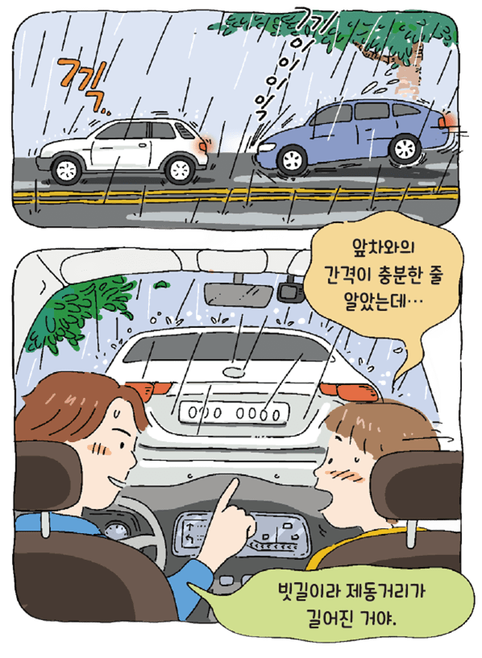
    <figcaption><b>교과서 28쪽</b> · &ldquo;앞차와의 간격이 충분한 줄 알았는데…&rdquo; / &ldquo;빗길이라 제동거리가 길어진 거야.&rdquo;</figcaption></figure>
   <div class="box warn"><b class="t">문제 상황</b>
   시속 100km로 주행하던 중 앞차가 갑자기 급제동하자 즉시 브레이크를 밟았다. 그러나 예상보다 제동거리가 길어 앞차와 충돌할 뻔하는 아찔한 순간이 발생하였다.
   장마철 빗길에서는 도로가 미끄러워져 제동거리가 평소보다 더 길어진다. 앞차와의 간격이 충분한 줄 알았는데 왜 이렇게 위험했을까?
   <br><br>실제로 자동차의 속도와 도로 상태에 따라 필요한 안전거리는 크게 달라진다. 그러나 운전자가 이를 즉시 계산하기는 쉽지 않다.
   <b>안전운전을 위한 제동거리를 계산할 수 있는 방법을 알아내기 위해 다양한 학문적 지식을 융합하여 해결 방법을 제안해 보자.</b></div>
   <div class="ask"><div class="ah">발문 · 채팅창에 한 줄로</div>
   <ol><li>이 문제를 푸는 데 어떤 <b>과목</b>의 지식이 필요할까요?</li>
   <li>그 과목에서 배운 것 중 정확히 <b>무엇</b>이 필요할까요?</li>
   <li>&ldquo;속도를 줄이면 됩니다&rdquo;는 답이 될까요? 왜 부족할까요?</li></ol></div>`},
 {n:"04",h:"오늘 수업은 이렇게 흘러갑니다",
  html:`<div class="tw"><table style="min-width:560px">
   <thead><tr><th style="width:90px">블록</th><th style="width:80px">시간</th><th style="width:70px">차시</th><th>하는 일</th></tr></thead>
   <tbody>
    <tr><td><b>강의 ①</b></td><td>17:10~17:40</td><td>5차시</td><td>융합 프로젝트란 무엇이고 왜 필요한가 — 개념 · 배경 · 세계의 흐름 · 다섯 역량</td></tr>
    <tr><td><b>강의 ②</b></td><td>17:40~18:10</td><td>6차시 전</td><td>융합 프로젝트의 특징 다섯 가지와 네 단계</td></tr>
    <tr><td><b>강의 ③</b></td><td>18:10~18:40</td><td>6차시 후</td><td>안전거리 사례를 네 단계로 끝까지 — 반응속도 측정 · 프로그램 · 시뮬레이터</td></tr>
    <tr><td><b>과제</b></td><td>18:50~19:50</td><td>7차시</td><td><b>나만의 융합 프로젝트 주제 정하기</b> — 오늘 정한 주제가 11월까지 이어집니다</td></tr>
    <tr><td><b>토의</b></td><td>20:00~20:30</td><td>—</td><td>서로의 주제를 검증하기</td></tr>
    <tr><td><b>정리</b></td><td>20:30~21:00</td><td>8차시</td><td>개념 정리와 확인 문제</td></tr>
   </tbody></table></div>
   <div class="box tip"><b>오늘의 한 문장</b> · <b>문제를 먼저 보고, 필요한 지식을 나중에 불러온다.</b> 이 문장이 오늘 수업의 전부입니다.</div>`}],},

/* ============ 1. 강의 ① ============ */
{kind:"lecture",nav:"강의 ①",mins:30,title:"융합 프로젝트란 무엇이고, 왜 필요한가",
 sub:"9차시 — 융합 프로젝트의 개념과 배경. 교과서 29~33쪽.",
 sections:[
 {n:"01",h:"프로젝트와 융합 프로젝트",
  html:`<div class="box"><b class="hl">프로젝트</b> · 일정한 목표를 달성하기 위해 정해진 기간 동안 수행하는 <b>한 번뿐인 활동</b>.
   시작과 종료 시점이 정해져 있으며 범위 · 시간 · 비용 등의 제약 조건 안에서 특정 목표를 달성하기 위한 활동들을 포함한다.
   교육에서는 학습자가 <b>스스로 활동을 선택하고 계획하며 방향을 설정해 가는 문제 해결 학습</b>으로 정의한다.</div>
  <div class="box" style="margin-top:12px;border-left:2px solid var(--accent)"><b class="hl">융합 프로젝트</b> · 서로 다른 교과에서 배운 지식과 기술을 통합하여 <b>하나의 문제를 해결하는 학습 활동</b>.</div>
  <p style="margin-top:14px"><b>왜 필요한가.</b> 오늘날 사회는 환경 오염, 인공지능 기술의 활용, 고령화, 에너지 문제처럼 복잡하고 다양한 과제에 직면해 있습니다.
  어느 한 교과의 지식만으로는 해결하기 어렵기 때문에, 각 교과의 장점을 연결해 새로운 해결 방법을 찾아야 합니다.</p>
  <p><b>무엇이 달라지는가.</b> 교과 간의 경계를 넘어 현실의 문제를 해결하는 과정을 중심으로 학습이 이루어집니다.
  배운 지식을 단순히 외우는 데 그치지 않고, <b>실제 상황에 적용하며 새로운 의미를 발견</b>하게 됩니다.</p>`},
 {n:"02",h:"사례로 보기 — 도시 열섬 현상",
  lead:"여름철 도심에서는 교외보다 기온이 높아지는 <b>도시 열섬 현상</b>이 나타납니다. 이 현상은 대기 오염을 심화시키고 냉방 에너지 사용량을 늘려 또 다른 환경 문제를 일으킵니다.",
  html:`<div class="tw"><table style="min-width:520px">
   <thead><tr><th style="width:90px">교과</th><th style="width:180px">맡는 역할</th><th>구체적으로 하는 일</th></tr></thead>
   <tbody>
    <tr><td><b>과학</b></td><td>열섬 현상의 원인</td><td>지표 피복, 인공 열, 바람길 등 원인을 과학적으로 규명한다</td></tr>
    <tr><td><b>수학</b></td><td>지역별 기온 차이의 분석</td><td>통계적 연구와 데이터 처리로 지역 간 차이를 수치화한다</td></tr>
    <tr><td><b>정보</b></td><td>열 지도 · 시뮬레이션 제작</td><td>기계학습으로 예측 모델을 만들고 시각화 프로그램을 구현한다</td></tr>
   </tbody></table></div>
   <div class="box tip"><b>핵심</b> · 세 교과가 <b>각자 따로</b> 도시 환경을 공부한 것이 아닙니다. <b>하나의 문제</b>를 향해 각자의 도구를 들고 모인 것입니다. 이것이 융합입니다.</div>
   <figure class="fig">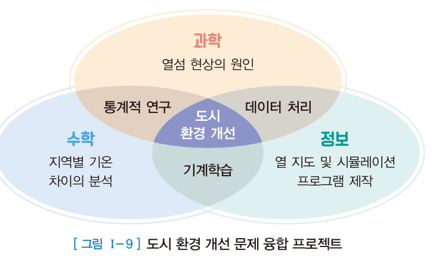<figcaption><b>교과서 29쪽 · 그림 Ⅰ-9</b> 도시 환경 개선 문제 융합 프로젝트 — 세 교과가 겹치는 한가운데에 문제가 놓입니다.</figcaption></figure>
   <div class="lbl" style="margin-top:22px">한 걸음 더 — 열섬 현상을 실제로 탐구한다면</div>
   <div class="grid g2">
    <div class="card"><h4>무엇이 원인인가</h4><p>콘크리트와 아스팔트의 열 저장, 녹지 부족, 에어컨 실외기 · 자동차가 내뿜는 <b>인공 열</b>, 건물 밀집으로 막힌 바람길이 복합적으로 작용합니다.
     밤에 기온이 잘 떨어지지 않는 주된 이유는 <b>건물이 밤하늘을 가려</b> 지표의 열이 우주로 빠져나가지 못하기 때문입니다. 습도가 낮고 바람이 약할수록 열섬은 심해집니다.</p></div>
    <div class="card"><h4>어떤 데이터를 쓸 수 있나</h4><p>기상청이 운영하는 <b>AWS(자동기상관측장비)</b> 지점별 기온 자료를 쓰면 같은 도시 안에서도 지점에 따라 기온이 얼마나 다른지, 시간대별로 <b>열섬 강도</b>가 어떻게 변하는지 계산할 수 있습니다.
     도심 지점 기온 − 교외 지점 기온 = 열섬 강도입니다.</p></div>
   </div>
   <div class="ask"><div class="ah">발문</div>
   위 표의 세 교과 중 <b>하나라도 빠지면</b> 이 프로젝트는 어떻게 되나요? 예를 들어 <b>정보</b>가 빠지면 무엇을 못 하게 될까요?</div>`,
  pages:[{p:29,t:"융합 프로젝트의 개념 · 그림 Ⅰ-9 도시 환경 개선"}]},
 {n:"03",h:"현실 문제는 학문처럼 나뉘어 있을까?",
  lead:"교과서 32쪽의 사고 실험입니다.",
  html:`<div class="box"><i>인류가 화성을 탐사하던 중 정체불명의 외계 생명체와 마주하게 되었다. 그들은 우리와 전혀 다른 모습과 소리를 지니고 있었으며, 가장 큰 과제는 서로의 생각을 이해하고 소통하는 일이었다. 이 문제를 해결하려면 어떻게 해야 할까?</i></div>
  <figure class="fig">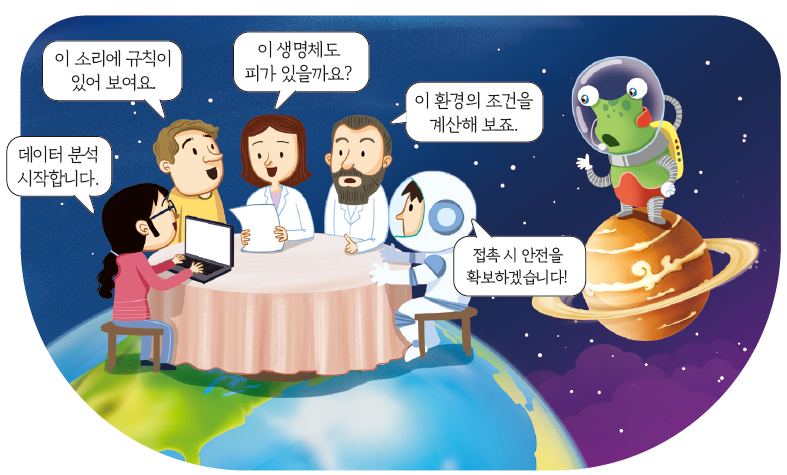
   <figcaption><b>교과서 32쪽</b> · &ldquo;데이터 분석 시작합니다.&rdquo; / &ldquo;이 소리에 규칙이 있어 보여요.&rdquo; / &ldquo;이 생명체도 피가 있을까요?&rdquo; / &ldquo;이 환경의 조건을 계산해 보죠.&rdquo; / &ldquo;접촉 시 안전을 확보하겠습니다!&rdquo;</figcaption></figure>
  <p>이 문제는 <b>어느 한 과목의 문제가 아닙니다.</b> 삽화 속 다섯 사람의 말을 다시 보세요. 각자 <b>자기 전공의 언어</b>로 같은 문제를 보고 있습니다.</p>
  <div class="tw"><table style="min-width:520px">
   <thead><tr><th style="width:200px">삽화 속 발언</th><th style="width:120px">누구의 관점</th><th>어떤 지식이 필요한가</th></tr></thead>
   <tbody>
    <tr><td>데이터 분석 시작합니다</td><td>정보 · 통계</td><td>신호를 수집하고 패턴을 찾는 방법</td></tr>
    <tr><td>이 소리에 규칙이 있어 보여요</td><td>언어 · 수학</td><td>반복 구조, 빈도 분석, 규칙 추론</td></tr>
    <tr><td>이 생명체도 피가 있을까요?</td><td>생명과학</td><td>생명 현상의 공통 조건</td></tr>
    <tr><td>이 환경의 조건을 계산해 보죠</td><td>물리 · 화학</td><td>대기 조성, 중력, 온도 계산</td></tr>
    <tr><td>접촉 시 안전을 확보하겠습니다</td><td>사회 · 윤리</td><td>위험 관리, 상대를 존중하는 접촉 규범</td></tr>
   </tbody></table></div>
  <p>현실의 문제는 처음부터 과목별로 잘려 있지 않습니다.
  <b>문제를 먼저 보고, 필요한 지식을 나중에 불러오는 것</b> — 이것이 융합 프로젝트의 사고방식입니다.</p>
  <div class="box tip"><b>교과서가 지목한 전문가들</b> · 교과서 32쪽 본문은 이 문제를 풀려면
  <b>외계인의 언어 체계를 분석할 언어학자</b>, <b>사고방식과 감정을 연구할 인지과학자</b>, <b>생명 구조와 환경을 조사할 생물학자</b>,
  그리고 <b>소통을 위한 기술을 개발할 컴퓨터공학자</b>가 함께해야 한다고 말합니다.</div>
  <div class="doit"><div class="dh">해 보기 <span class="m">3분 · 채팅</span></div>
   <p>교과서 32쪽 TIP의 질문입니다. <b>&ldquo;만약 내가 화성에서 외계 생명체와 대화해야 한다면, 어떤 사람들과 함께 가야 할지 생각해 보자.&rdquo;</b><br>
   삽화에 <b>여섯 번째 사람</b>을 추가한다면 누구를 넣겠습니까? 그 사람은 뭐라고 말할까요? 전공과 대사를 한 줄로 써 보세요.<br>
   <span style="color:var(--dim)">예) 미술 — &ldquo;저 생명체가 이해할 수 있는 그림 기호를 만들어 볼게요.&rdquo;</span></p></div>`,
  pages:[{p:32,t:"융합 프로젝트의 배경 · 현실 문제는 학문처럼 나뉘어 있을까?"}]},
 {n:"04",h:"세계가 주목하는 융합 교육의 흐름",
  lead:"오늘날 세계는 복잡한 문제를 해결할 수 있는 융합형 인재를 필요로 합니다. 여러 나라가 과목의 경계를 넘나들며 지식을 연결하는 교육을 강화하고 있습니다.",
  html:`<div class="grid g3">
   <div class="card num"><div class="no">美</div><h4>미국 — STEM에서 STEAM으로</h4>
    <p>2000년대 초반 과학(Science) · 기술(Technology) · 공학(Engineering) · 수학(Mathematics)을 중심으로 하는 STEM 교육이 확산되었습니다.
    이후 예술(Art)을 더한 <b>STEAM</b>이 제안되면서, 과학 · 기술 중심의 학습을 넘어 예술적 감성과 창의성까지 함께 강조하는 방향으로 발전했습니다.</p>
    <p style="margin-top:8px;color:var(--dim)">복잡한 사회 문제를 풀려면 과학적 사고뿐 아니라 인간의 가치와 문화에 대한 이해도 필요하다는 뜻입니다.</p></div>
   <div class="card num"><div class="no">芬</div><h4>핀란드 — 현상 기반 학습</h4>
    <p>핀란드를 비롯한 유럽 여러 나라는 <b>현상 기반 학습(phenomenon-based learning)</b>을 도입했습니다.
    학문의 구분을 뛰어넘어 실제 사회나 자연에서 나타나는 <b>현상 자체</b>를 중심으로 학습하는 방법입니다.</p>
    <p style="margin-top:8px;color:var(--dim)">예를 들어 기후 변화를 탐구할 때 과학적 지식뿐 아니라 지리학 · 사회학 · 경제학 · 정보 기술을 함께 활용합니다.</p></div>
   <div class="card num"><div class="no">韓</div><h4>대한민국 — 융합적 사고와 프로젝트 학습</h4>
    <p>우리나라 학교 교육도 <b>융합적 사고와 프로젝트 학습</b>을 강조합니다. 과학 · 기술 · 공학 · 수학 · 예술의 융합적 소양(STEAM)을 기르도록 권장하고,
    정보 교과에서는 데이터 과학 · 인공지능 · 피지컬 컴퓨팅 등 현실 문제 해결에 직접 연결되는 내용을 다룹니다.</p>
    <p style="margin-top:8px;color:var(--dim)">이 강좌도 그 흐름 위에 있습니다.</p></div>
  </div>
  <div class="box" style="margin-top:14px"><b>세 나라의 공통점</b> · 새로운 문제와 복잡한 상황은 어느 한 분야의 지식만으로 해결하기 어렵고,
  <b>서로 다른 전공과 관점이 모여야 비로소 해답을 찾을 수 있다</b>는 것입니다.</div>

  <figure class="fig">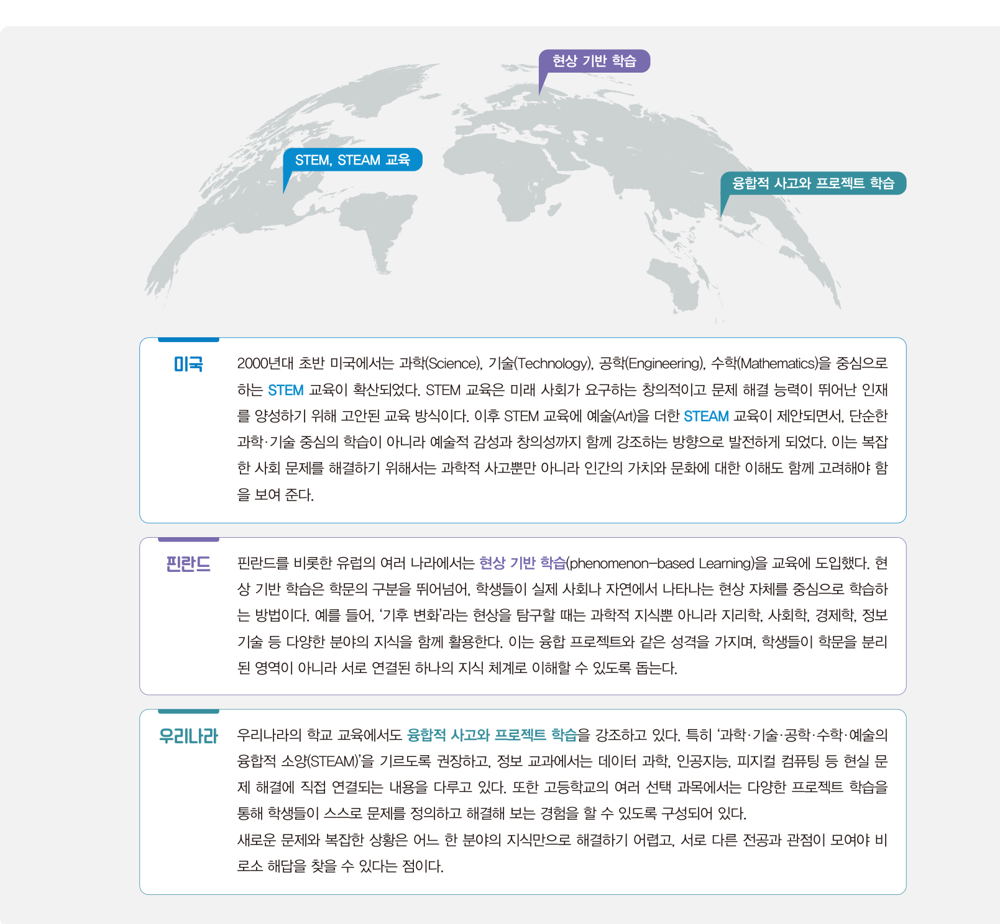<figcaption><b>교과서 33쪽</b> 세계가 주목하는 융합 교육의 흐름 — 미국 STEM·STEAM / 핀란드 현상 기반 학습 / 우리나라 융합적 사고와 프로젝트 학습</figcaption></figure>
  <div class="lbl">한 걸음 더 — 핀란드 현상 기반 학습은 실제로 어떤 모습인가</div>
  <p>핀란드는 2016년 8월 시행된 새 교육과정에서 현상 기반 학습을 정식으로 도입했고, 헬싱키시는 만 7~16세 학생에게 이를 의무화했습니다.
  아래는 카우하바 지역 <b>7학년 학생들이 &lsquo;학교급식&rsquo;이라는 하나의 현상</b>을 여러 교과로 함께 탐구한 실제 수업입니다.</p>
  <div class="tw"><table style="min-width:520px">
   <thead><tr><th style="width:110px">교과</th><th>학교급식이라는 현상에 던진 질문</th></tr></thead>
   <tbody>
    <tr><td><b>화학</b></td><td>음식의 신선함은 어떻게 유지될까?</td></tr>
    <tr><td><b>수학</b></td><td>식재료의 가격과 급식 가격은 어떻게 형성될까?</td></tr>
    <tr><td><b>종교</b></td><td>특정 음식이 제한되는 종교를 가진 학생을 위한 식단은 어떠해야 할까?</td></tr>
    <tr><td><b>가정</b></td><td>학교급식의 균형 잡힌 한 끼 구성은 무엇일까?</td></tr>
   </tbody></table></div>
  <div class="ask"><div class="ah">발문</div>
   <b>우리 학교 급식</b>이라면 어떤 질문을 던질 수 있을까요? 위 네 교과에 <b>정보 교과</b>를 하나 더 넣는다면 어떤 질문이 되겠습니까?<br>
   <span style="color:var(--dim)">힌트 · 이 강좌 5회차에서 실제로 교육청 급식 API를 다룹니다.</span></div>

  <div class="lbl">더 찾아볼 자료</div>
  <div class="reslist">
   <a class="res" href="https://steam.kosac.re.kr/main" target="_blank" rel="noreferrer">
    <div class="rk">국내 융합교육 · 한국과학창의재단</div><div class="rt">융합교육 STEAM 포털</div>
    <div class="rd">초 · 중 · 고 교과중심 STEAM 프로그램과 창의적 체험활동 자료를 내려받을 수 있습니다.</div><div class="ru">steam.kosac.re.kr</div></a>
   <a class="res" href="https://ncsd.go.kr/unsdgs/goals" target="_blank" rel="noreferrer">
    <div class="rk">SDGs · 지속가능발전포털</div><div class="rt">UN 지속가능발전목표 17개</div>
    <div class="rd">교과서 주제 예시가 모두 SDGs와 연결되어 있습니다. 7회차 프로젝트 주제 선정에 다시 씁니다.</div><div class="ru">ncsd.go.kr/unsdgs/goals</div></a>
   <a class="res" href="https://www.si.re.kr/node/57907" target="_blank" rel="noreferrer">
    <div class="rk">핀란드 · 서울연구원</div><div class="rt">만 7~16세 학생에 현상기반학습 의무화 (헬싱키市)</div>
    <div class="rd">핀란드가 현상 기반 학습을 어떻게 제도화했는지 정리한 국내 자료입니다.</div><div class="ru">si.re.kr/node/57907</div></a>
   <a class="res" href="https://ko.wikipedia.org/wiki/도시_열섬" target="_blank" rel="noreferrer">
    <div class="rk">열섬 현상 · 배경 지식</div><div class="rt">도시 열섬 — 위키백과</div>
    <div class="rd">앞에서 본 도시 환경 개선 프로젝트의 과학적 배경을 더 읽어 볼 수 있습니다.</div><div class="ru">ko.wikipedia.org</div></a>
  </div>`,
  pages:[{p:33,t:"세계가 주목하는 융합 교육의 흐름 — 미국 · 핀란드 · 우리나라"}]},
 {n:"05",h:"융합 프로젝트로 길러지는 다섯 가지 역량",
  lead:"교과서 30~31쪽. 이 다섯 가지는 이 강좌의 수행평가 관점과도 그대로 이어집니다.",
  html:`<div class="grid g2">
   <div class="card"><h4>① 정보 역량</h4><p>데이터를 수집 · 분석 · 관리하고, 프로그램이나 시뮬레이션을 활용하여 컴퓨팅 기반으로 문제를 해결하는 능력.</p></div>
   <div class="card"><h4>② 협업 및 의사소통 능력</h4><p>대부분의 융합 프로젝트는 모둠 단위로 진행됩니다. 각자의 역할을 수행하고 팀원과 의견을 조율하며 공동의 목표를 달성하는 과정에서, 타인의 관점을 존중하고 효과적으로 소통하는 능력을 습득합니다.</p></div>
   <div class="card"><h4>③ 창의적 문제 해결 능력</h4><p>단순한 문제 풀이가 아니라 새로운 방법을 탐색하고 다양한 교과 지식을 연결하는 과정입니다. 예상치 못한 상황에서 창의적으로 접근하며 해결책을 설계하고 구현합니다.</p></div>
   <div class="card"><h4>④ 윤리적 · 사회적 책임 의식</h4><p>현실 문제를 다루며 기술과 사회가 미치는 영향을 고려하게 됩니다. 환경 문제, 정보 윤리, 사회적 약자 배려 등을 통해 책임 의식과 윤리적 판단 능력을 기릅니다.</p></div>
   <div class="card"><h4>⑤ 자기 주도 학습 역량</h4><p>문제 정의에서 결과 공유까지 전 과정을 주도적으로 수행하며, 스스로 계획을 세우고 실행하는 능력을 강화합니다.</p></div>
  </div>
  <div class="box tip"><b>이 다섯 역량이 곧 평가 기준입니다</b> · 이 강좌의 수행평가 3영역은 위 역량과 그대로 대응합니다.
  정보 역량 → 영역 1(기술) · 창의적 문제 해결 → 영역 2(구현) · 협업과 자기 주도 → 영역 3(구현실습과 발표).
  윤리적 · 사회적 책임 의식은 모든 영역에서 <b>데이터 출처 표기와 개인정보 처리</b>로 확인합니다.</div>`,
  pages:[{p:30,t:"융합 프로젝트로 길러지는 역량 (1) 정보 · 협업 · 창의"},{p:31,t:"역량 (2) 윤리 · 자기 주도 + 프로젝트 주제 예시"}]}],
 quiz:[
 {q:"융합 프로젝트의 정의로 가장 적절한 것은?",
  opts:["여러 과목의 내용을 순서대로 모아 정리하는 활동","서로 다른 교과에서 배운 지식과 기술을 통합하여 하나의 문제를 해결하는 학습 활동","한 교과의 내용을 깊이 있게 반복 학습하는 활동","정해진 정답을 빠르게 찾는 훈련 활동"],
  a:1,why:"융합 프로젝트는 <b>지식을 모아 놓는 것</b>이 아니라 <b>하나의 문제를 향해 여러 교과의 지식과 기술을 통합</b>하는 학습 활동입니다. 교과서 29쪽."},
 {q:"핀란드를 비롯한 유럽 여러 나라가 도입한, 학문의 구분을 넘어 실제 현상 자체를 중심으로 학습하는 방법은?",
  opts:["STEM 교육","STEAM 교육","현상 기반 학습","자유 학기제"],
  a:2,why:"<b>현상 기반 학습(phenomenon-based learning)</b>입니다. 기후 변화 같은 현상을 탐구할 때 과학·지리·사회·경제·정보를 함께 활용합니다. 교과서 33쪽."},
 {q:"융합 프로젝트로 길러지는 역량으로 교과서가 제시하지 <b>않은</b> 것은?",
  opts:["정보 역량","협업 및 의사소통 능력","암기 및 속독 능력","윤리적 · 사회적 책임 의식"],
  a:2,why:"교과서가 제시하는 다섯 역량은 정보 역량, 협업 및 의사소통 능력, 창의적 문제 해결 능력, 윤리적·사회적 책임 의식, 자기 주도 학습 역량입니다. 교과서 30~31쪽."}]},

/* ============ 2. 강의 ② ============ */
{kind:"lecture",nav:"강의 ②",mins:30,title:"융합 프로젝트의 특징과 네 단계",
 sub:"10차시 — 무엇이 융합 프로젝트를 다른 수업과 구별되게 하는가. 교과서 34~36쪽.",
 sections:[
 {n:"01",h:"융합 프로젝트의 다섯 가지 특징",
  lead:"융합 프로젝트는 문제 해결을 중심에 두고, 학문적 지식과 실제 경험을 연결하며, 학생들이 주도적으로 탐구하는 학습 방식입니다. 단순히 여러 교과의 지식을 모아 놓는 활동이 아닙니다.",
  html:`<div class="tw"><table style="min-width:560px">
   <thead><tr><th style="width:150px">특징</th><th>의미</th></tr></thead>
   <tbody>
    <tr><td><b>문제 중심 학습</b></td><td>실생활 속 문제를 해결하는 <b>과정 자체가 학습의 핵심</b>이다</td></tr>
    <tr><td><b>다학문적 접근</b></td><td>다양한 교과 지식의 유기적 연결로 지식의 <b>통합적 가치</b>를 경험한다</td></tr>
    <tr><td><b>과정 중심 학습</b></td><td>해결 방안을 찾아가는 과정에서의 <b>시행착오가 중요한 배움</b>이다</td></tr>
    <tr><td><b>학생 주도성</b></td><td>자기 주도적 학습 능력과 문제를 해결할 수 있는 역량이 향상된다</td></tr>
    <tr><td><b>창의성과 융합적 사고</b></td><td>미래 사회가 요구하는 <b>문제 해결형 인재</b>로 성장한다</td></tr>
   </tbody></table></div>
   <figure class="fig">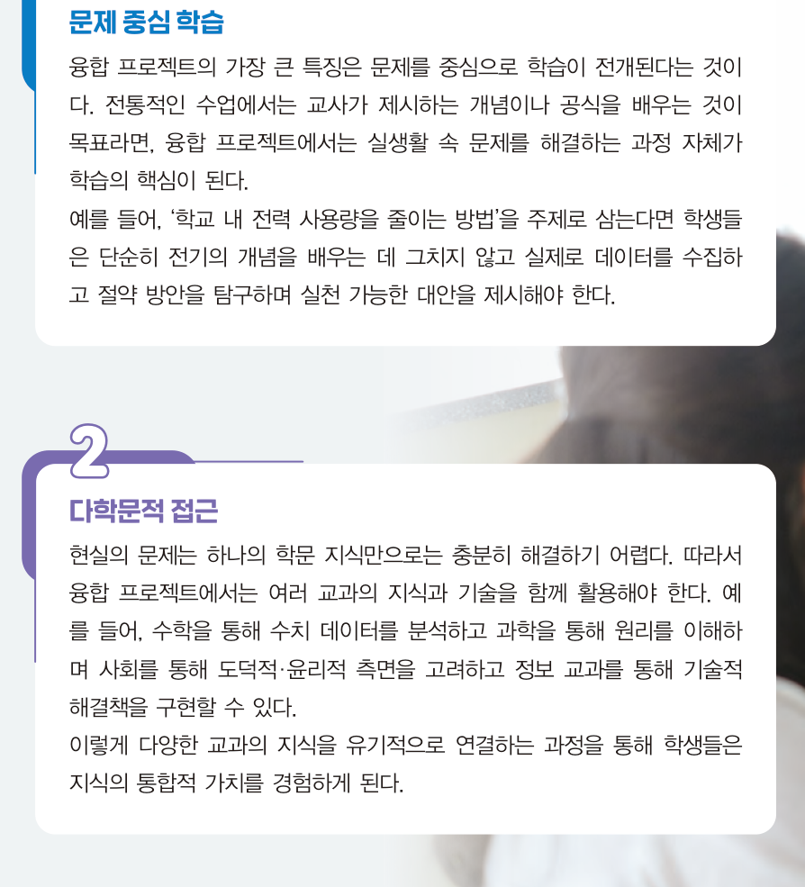<figcaption><b>교과서 34쪽</b> 특징 ① 문제 중심 학습 · ② 다학문적 접근</figcaption></figure>
   <figure class="fig">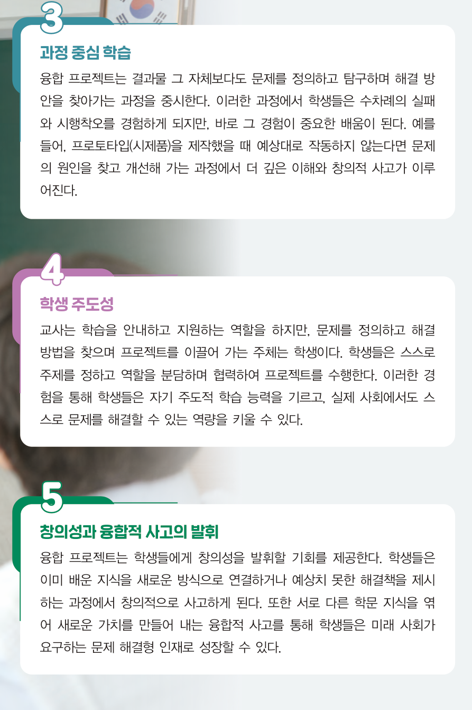<figcaption><b>교과서 35쪽</b> 특징 ③ 과정 중심 학습 · ④ 학생 주도성 · ⑤ 창의성과 융합적 사고의 발휘</figcaption></figure>
   <div class="lbl">전통적인 수업과 무엇이 다른가</div>
   <div class="tw"><table style="min-width:600px">
    <thead><tr><th style="width:130px">비교 항목</th><th>전통적인 수업</th><th>융합 프로젝트</th></tr></thead>
    <tbody>
     <tr><td><b>학습의 목표</b></td><td>교사가 제시하는 개념이나 공식을 배우는 것</td><td>실생활 속 문제를 해결하는 <b>과정 자체</b>가 학습의 핵심</td></tr>
     <tr><td><b>지식의 범위</b></td><td>한 교과 안에서 완결</td><td>여러 교과의 지식과 기술을 <b>함께</b> 활용</td></tr>
     <tr><td><b>실패의 의미</b></td><td>피해야 할 것</td><td>시행착오가 <b>중요한 배움</b></td></tr>
     <tr><td><b>주도권</b></td><td>교사가 절차를 제시</td><td>학생이 문제 정의부터 결과 공유까지 주도</td></tr>
     <tr><td><b>결과물</b></td><td>정답</td><td>보고서 · 프로토타입 · 영상 등 <b>실제로 작동하는 것</b></td></tr>
    </tbody></table></div>
   <div class="box"><b>교과서가 든 예 — 문제 중심 학습</b> · &lsquo;학교 내 전력 사용량을 줄이는 방법&rsquo;을 주제로 삼는다면,
   학생들은 단순히 전기의 개념을 배우는 데 그치지 않고 <b>실제로 데이터를 수집하고 절약 방안을 탐구하며 실천 가능한 대안을 제시</b>해야 합니다. (교과서 34쪽)</div>
   <div class="box"><b>교과서가 든 예 — 다학문적 접근</b> · 수학을 통해 수치 데이터를 분석하고, 과학을 통해 원리를 이해하며,
   사회를 통해 도덕적 · 윤리적 측면을 고려하고, 정보 교과를 통해 기술적 해결책을 구현할 수 있습니다. (교과서 34쪽)</div>
   <div class="box tip"><b>기억할 것</b> · <b>과정 중심 학습</b>이라는 말은 곧 <b>실패해도 된다</b>는 뜻입니다.
   이 강좌의 수행평가도 결과물의 완성도만 보지 않고 <b>어떻게 고쳐 나갔는지</b>를 함께 봅니다. 그래서 중간 과정 기록과 프롬프트 로그를 제출하도록 하는 것입니다.</div>`,
  pages:[{p:34,t:"융합 프로젝트의 특징 (1) 문제 중심 학습 · (2) 다학문적 접근"},{p:35,t:"특징 (3) 과정 중심 · (4) 학생 주도성 · (5) 창의성과 융합적 사고"}]},
 {n:"02",h:"융합 프로젝트의 네 단계",
  lead:"프로젝트는 주제를 정하고 활동하는 것으로 끝나지 않습니다. 일정한 절차와 단계를 체계적으로 밟아 나갈 때 문제 해결 능력과 협업 능력을 함께 기를 수 있습니다.",
  html:`<div class="flow">
   <div class="fstep"><div class="n">STEP 1</div><div class="t">문제 인식</div><div class="d">문제를 발견하고 인식한다</div></div>
   <div class="fstep"><div class="n">STEP 2</div><div class="t">탐구 계획</div><div class="d">해결 방법을 찾기 위한 탐구 계획을 설계한다</div></div>
   <div class="fstep"><div class="n">STEP 3</div><div class="t">실행 및 탐구</div><div class="d">탐구 계획에 따라 실제 활동을 수행한다</div></div>
   <div class="fstep"><div class="n">STEP 4</div><div class="t">결과 공유 및 성찰</div><div class="d">결과를 정리하고 발표한다</div></div>
  </div>
  <div class="tw" style="margin-top:18px"><table style="min-width:640px">
   <thead><tr><th style="width:120px">단계</th><th style="width:250px">하는 일</th><th>예시</th></tr></thead>
   <tbody>
    <tr><td><b>1. 문제 인식</b></td>
     <td>주변의 일상이나 사회 현상에서 <b>해결할 가치가 있는 문제</b>를 인식한다. 문제를 명확하게 정의하여 이후 탐구의 방향을 분명히 설정한다.</td>
     <td>지역사회에서 발생하는 미세 먼지 문제, 학교 급식에서 발생하는 음식물 쓰레기 문제 등</td></tr>
    <tr><td><b>2. 탐구 계획</b></td>
     <td>모둠을 구성하고 역할을 나누며 필요한 지식과 자료를 탐색한다. 프로젝트의 목표를 설정하고 일정과 방법을 구체화한다.</td>
     <td>데이터 수집 방법(설문 조사, 관찰, 인터넷 자료 검색 등) 선택, 사용할 도구(프로그래밍 언어, 그래프 작성 도구 등) 선택</td></tr>
    <tr><td><b>3. 실행 및 탐구</b></td>
     <td>필요한 자료를 수집하고 분석하며 해결 방안을 구체적으로 모색한다. 예상치 못한 문제를 만나면 계획을 수정하거나 새로운 방법을 시도하며 지식의 실제 적용 능력을 기른다.</td>
     <td>음식물 쓰레기 문제를 해결하기 위해 학생이 직접 급식 잔반량을 측정하고, 결과를 그래프로 시각화하며, 홍보 영상을 제작</td></tr>
    <tr><td><b>4. 결과 공유<br>및 성찰</b></td>
     <td>보고서 · 발표 자료 · 영상 · 프로토타입 등 다양한 형태로 표현한다. 발표를 통해 다른 모둠과 아이디어를 나누고 생각을 확장한다. 마친 후에는 전체 과정을 돌아보며 잘된 점과 개선할 점을 성찰한다.</td>
     <td>다른 모둠의 의견을 듣고 우리 모둠의 부족한 점을 반성, 우리 모둠에 적용할 수 있는 제안 선별 등</td></tr>
   </tbody></table></div>
   <figure class="fig">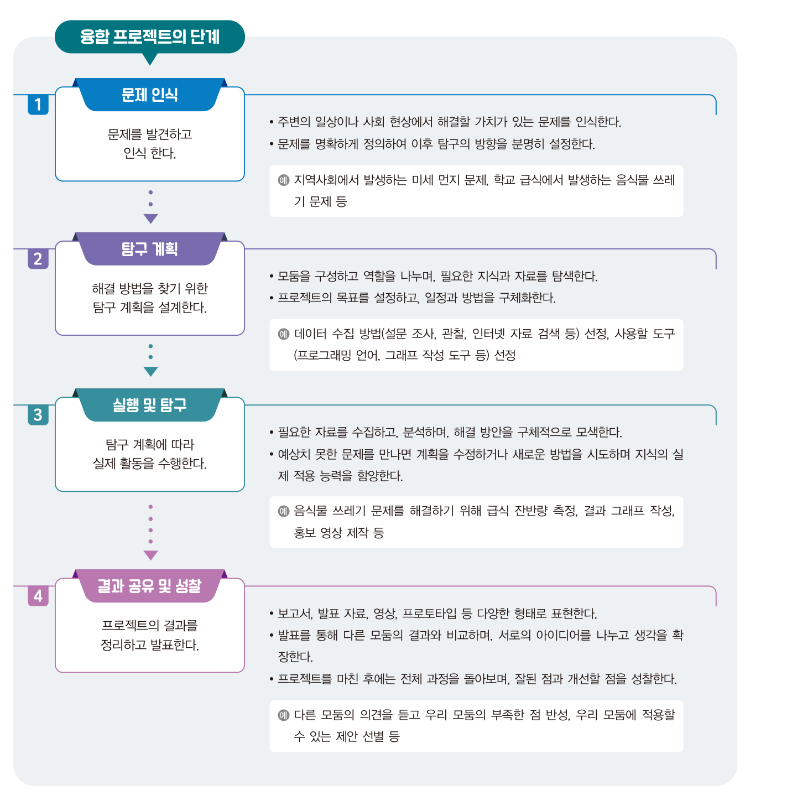<figcaption><b>교과서 36쪽</b> 융합 프로젝트의 단계 — 각 단계에서 하는 일과 예시가 함께 정리되어 있습니다.</figcaption></figure>
   <div class="lbl">단계마다 &lsquo;끝났다&rsquo;는 신호와 &lsquo;아직이다&rsquo;는 신호</div>
   <div class="tw"><table style="min-width:600px">
    <thead><tr><th style="width:120px">단계</th><th style="width:44%">다음으로 넘어가도 좋다는 신호</th><th>아직 머물러야 한다는 신호</th></tr></thead>
    <tbody>
     <tr><td><b>1. 문제 인식</b></td><td>문제를 <b>한 문장</b>으로 쓸 수 있고, 그 문장에 &lsquo;누가 · 무엇이 · 얼마나&rsquo;가 들어 있다</td><td>&ldquo;환경 문제&rdquo;처럼 범주만 있고 측정할 대상이 없다</td></tr>
     <tr><td><b>2. 탐구 계획</b></td><td>어떤 데이터를 <b>어디서 어떻게</b> 얻을지 정해졌고, 역할과 일정이 나뉘었다</td><td>&ldquo;인터넷에 있을 것 같다&rdquo;에서 더 나아가지 못한다</td></tr>
     <tr><td><b>3. 실행 및 탐구</b></td><td>데이터가 실제로 쌓였고, 계획을 <b>고친 기록</b>이 남아 있다</td><td>계획대로만 진행되고 아무것도 수정되지 않았다</td></tr>
     <tr><td><b>4. 결과 공유<br>및 성찰</b></td><td>남이 보고 <b>재현</b>할 수 있고, 다음에 바꿀 점을 말할 수 있다</td><td>&ldquo;열심히 했다&rdquo; 외에 할 말이 없다</td></tr>
    </tbody></table></div>
   <div class="doit"><div class="dh">해 보기 <span class="m">4분 · 짝 활동</span></div>
    <p><b>우리 학교의 불편한 점 하나</b>를 고르고, 그것을 네 단계로 쪼개 각 단계에 한 줄씩 써 보세요. 쓰다가 막히는 단계가 있다면 그 지점이 바로 <b>주제가 아직 덜 좁혀진 곳</b>입니다.</p></div>`,
  pages:[{p:36,t:"융합 프로젝트의 단계 — 문제 인식 · 탐구 계획 · 실행 및 탐구 · 결과 공유 및 성찰"}]},
 {n:"03",h:"이 강좌 전체가 이 네 단계로 흘러갑니다",
  html:`<div class="tw"><table style="min-width:560px">
   <thead><tr><th style="width:130px">단계</th><th style="width:150px">해당 회차</th><th>이 강좌에서 하는 일</th></tr></thead>
   <tbody>
    <tr><td><b>1. 문제 인식</b></td><td>2회차 (오늘) · 7회차</td><td>나만의 주제 정하기 → SDGs에서 프로젝트 주제 확정</td></tr>
    <tr><td><b>2. 탐구 계획</b></td><td>3~5회차 · 7회차</td><td>데이터 분석 · 센서 · 웹 기술을 익히고, 팀 탐구 계획서 작성</td></tr>
    <tr><td><b>3. 실행 및 탐구</b></td><td>6~10회차</td><td>모델 학습 · 성능 평가 · 최적 조건 도출 · 프로토타입 구현</td></tr>
    <tr><td><b>4. 결과 공유 및 성찰</b></td><td>11~12회차</td><td>보고서 작성 · GitHub 업로드 · 성과공유회 발표 · 성찰</td></tr>
   </tbody></table></div>
   <div class="box"><b>오늘 여러분이 정하는 주제가 11월 성과공유회까지 이어집니다.</b> 그래서 오늘의 과제가 가볍지 않습니다.</div>`}],
 quiz:[
 {q:"융합 프로젝트의 네 단계를 순서대로 바르게 나열한 것은?",
  opts:["탐구 계획 → 문제 인식 → 실행 및 탐구 → 결과 공유 및 성찰","문제 인식 → 탐구 계획 → 실행 및 탐구 → 결과 공유 및 성찰","문제 인식 → 실행 및 탐구 → 탐구 계획 → 결과 공유 및 성찰","탐구 계획 → 실행 및 탐구 → 문제 인식 → 결과 공유 및 성찰"],
  a:1,why:"<b>문제 인식 → 탐구 계획 → 실행 및 탐구 → 결과 공유 및 성찰</b> 순서입니다. 교과서 36쪽."},
 {q:"모둠을 구성하고 역할을 나누며, 데이터 수집 방법과 사용할 도구를 선택하는 것은 어느 단계에 해당하는가?",
  opts:["문제 인식","탐구 계획","실행 및 탐구","결과 공유 및 성찰"],
  a:1,why:"<b>탐구 계획</b> 단계입니다. 모둠 구성·역할 분담·목표 설정·일정과 방법의 구체화가 여기서 이루어집니다. 교과서 36쪽."},
 {q:"융합 프로젝트의 특징 중 <b>과정 중심 학습</b>이 뜻하는 바로 가장 적절한 것은?",
  opts:["최종 결과물의 완성도만으로 평가한다는 뜻이다","해결 방안을 찾아가는 과정에서의 시행착오가 중요한 배움이라는 뜻이다","정해진 절차를 빠짐없이 지켜야 한다는 뜻이다","교사가 제시한 과정을 그대로 따라가야 한다는 뜻이다"],
  a:1,why:"시행착오 자체가 배움입니다. 그래서 이 강좌는 중간 과정 기록과 개선 시도를 평가 근거로 삼습니다. 교과서 34~35쪽."}]},

/* ============ 3. 강의 ③ ============ */
{kind:"lecture",nav:"강의 ③",mins:30,title:"사례로 끝까지 따라가기 — 안전거리 프로젝트",
 sub:"11차시 — 네 단계를 실제 문제에 적용해 프로그램까지 완성해 봅니다. 교과서 37~42쪽.",
 sections:[
 {n:"00",h:"문제 상황",
  html:`<div class="box warn"><b class="t">안전거리 미확보로 인한 대형 교통사고 발생 — ○○일보</b>
   지난달 고속도로에서 앞차와의 거리를 확보하지 못한 25톤 화물차가 승용차를 들이받는 사고가 발생해 여러 명의 사상자가 나왔다. 경찰은 안전거리 미확보가 피해를 키운 원인으로 보고 있다.
   실제로 안전거리 부족으로 인한 교통사고는 해마다 <b>2만 건 이상</b> 발생하며, 이로 인한 사상자는 하루 평균 약 <b>100명</b>에 이른다.
   전문가들은 시속 80km로 주행할 경우 최소 80m 이상의 간격을 두어야 하며, 비나 눈이 내릴 때에는 제동거리가 길어지므로 평소보다 더 넓은 안전거리를 유지해야 한다고 강조한다.</div>
   <figure class="fig">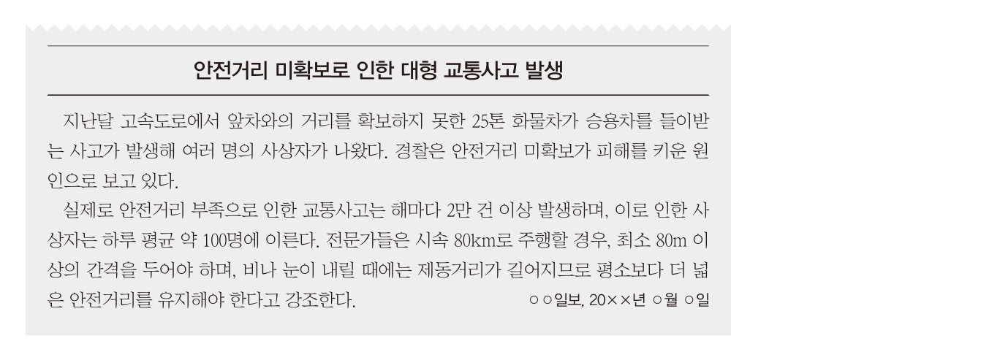<figcaption><b>교과서 37쪽</b> 신문 기사 — 안전거리 미확보로 인한 대형 교통사고 발생</figcaption></figure>
   <div class="box tip"><b>현실의 규칙</b> · 한국도로교통공단은 안전거리를 <b>고속도로에서는 주행 속도의 숫자만큼(m)</b>,
   <b>일반도로에서는 주행 속도에서 15를 뺀 숫자만큼(m)</b> 두라고 권고합니다.
   시속 80km면 고속도로에서는 80m, 일반도로에서는 65m입니다. 기사에 나온 &ldquo;시속 80km에 최소 80m&rdquo;가 바로 이 규칙입니다.
   <br><br>오늘 만들 프로그램은 이 <b>경험적인 규칙이 왜 그렇게 나오는지</b>를 물리와 수학으로 계산해 확인하는 것입니다.</div>`,
  pages:[{p:37,t:"융합 프로젝트의 사례 · 신문 기사 · 1단계 문제 인식"}]},
 {n:"01",h:"1단계 · 문제 인식",
  lead:"안전거리 미확보로 인한 교통사고의 원인과 관련 지식을 이해하고, 해결해야 할 문제를 명확히 정의합니다.",
  html:`<p><b>(1) 자동차가 브레이크를 밟았을 때 바로 멈추지 않는 이유는?</b></p>
  <div class="box"><b class="hl">관성(慣性)</b> · 어떤 물체가 외부의 힘에 영향을 받지 않는 한 현재 운동 상태를 지속하려는 성질.
  따라서 무게가 많이 나갈수록(질량이 클수록) 물체의 관성이 크다.<br><br>
  브레이크를 밟은 순간부터 차체가 완전히 정지할 때까지의 제동거리는 <b>차가 진행하는 속력의 제곱에 비례</b>하여 멈추게 된다.</div>
  <p style="margin-top:16px"><b>(2) 공주거리 · 제동거리 · 안전거리는 무엇인가?</b></p>
  <div class="tw"><table style="min-width:520px">
   <thead><tr><th style="width:110px">용어</th><th>정의</th></tr></thead>
   <tbody>
    <tr><td><b>공주거리</b></td><td>운전 중에 운전자가 위험 상황을 인지하고 브레이크를 밟아 자동차가 멈추기 시작할 때까지 자동차가 움직인 거리</td></tr>
    <tr><td><b>제동거리</b></td><td>브레이크를 밟고 난 뒤 브레이크가 작동하기 시작한 순간부터 자동차가 완전히 정지할 때까지의 거리</td></tr>
    <tr><td><b>안전거리</b></td><td>공주거리와 제동거리를 <b>합한</b> 거리. 운전자가 위험 상황을 인지하여 브레이크를 밟아 자동차가 완전히 멈출 때까지 필요한 전체 거리</td></tr>
   </tbody></table></div>
   <figure class="fig">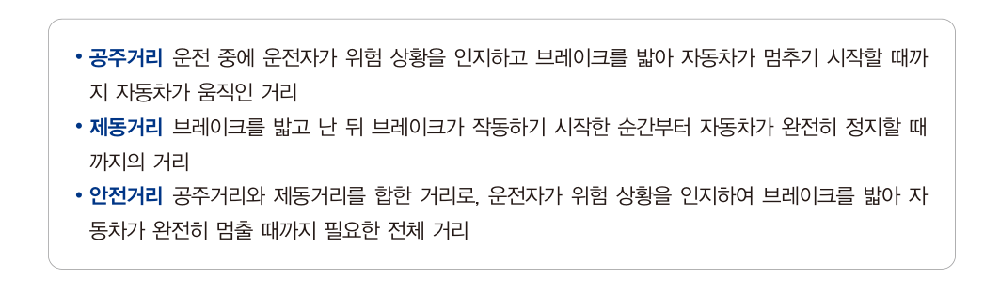<figcaption><b>교과서 37쪽</b> 공주거리 · 제동거리 · 안전거리의 정의</figcaption></figure>
   <p style="margin-top:16px"><b>(3) 우리가 해결해야 할 문제는 구체적으로 무엇인가?</b></p>
   <div class="box" style="border-left:2px solid var(--accent)"><b>공주거리와 제동거리를 계산하여 필요한 안전거리를 구해 주는 프로그램 만들기</b></div>
   <div class="box tip"><b>주목</b> · 문제가 <b>&ldquo;교통사고를 줄이자&rdquo;</b>에서 <b>&ldquo;안전거리를 계산하는 프로그램을 만들자&rdquo;</b>로 좁혀졌습니다.
   막연한 문제를 <b>만들 수 있는 것</b>으로 바꾸는 것 — 이것이 문제 인식 단계의 핵심입니다.</div>`},
 {n:"02",h:"2단계 · 탐구 계획",
  lead:"문제를 체계적으로 구조화하고, 해결 과정을 알고리즘으로 설계합니다.",
  html:`<p><b>① 문제 확인 및 문제 나누기</b></p>
  <div class="flow">
   <div class="fstep"><div class="n">문제</div><div class="t">안전거리 구하기</div><div class="d">자동차의 안전거리를 구하는 프로그램 만들기</div></div>
   <div class="fstep"><div class="n">나누기 1</div><div class="t">공주거리 구하기</div><div class="d">반응 시간 × 속도</div></div>
   <div class="fstep"><div class="n">나누기 2</div><div class="t">제동거리 구하기</div><div class="d">속도의 제곱 ÷ (2 × 감속도)</div></div>
   <div class="fstep"><div class="n">나누기 3</div><div class="t">안전거리 구하기</div><div class="d">공주거리 + 제동거리</div></div>
  </div>
  <p style="margin-top:18px"><b>② 핵심 요소 추출하기</b></p>
  <div class="tw"><table style="min-width:640px">
   <thead><tr><th style="width:150px">핵심 요소</th><th style="width:120px">의미</th><th>설명</th></tr></thead>
   <tbody>
    <tr><td><b>반응 시간</b> <span style="font-family:var(--mono);color:var(--dim)">time</span></td><td>초 단위</td><td>운전자가 위험을 인지하기까지 걸린 시간을 입력하여 공주거리 계산의 기초 자료로 활용</td></tr>
    <tr><td><b>자동차 속도</b> <span style="font-family:var(--mono);color:var(--dim)">carspeed</span></td><td>km/h → m/s</td><td>80~160km/h 범위에서 무작위로 생성한 뒤 초속으로 단위 변환</td></tr>
    <tr><td><b>공주거리</b> <span style="font-family:var(--mono);color:var(--dim)">delay</span></td><td>m</td><td>위험을 인지하여 브레이크를 밟기 전까지 자동차가 이동한 거리 = 속도(m/s) × 반응 시간</td></tr>
    <tr><td><b>속도 변화</b> <span style="font-family:var(--mono);color:var(--dim)">minusspeed</span></td><td>m/s²</td><td>초당 자동차가 감속하는 정도. 기본 감속도 5m/s²로 설정</td></tr>
    <tr><td><b>제동거리</b> <span style="font-family:var(--mono);color:var(--dim)">stop</span></td><td>m</td><td>브레이크를 밟은 뒤 완전히 멈출 때까지 이동한 거리. 나중 속도는 0m/s</td></tr>
    <tr><td><b>안전거리</b> <span style="font-family:var(--mono);color:var(--dim)">safe</span></td><td>m</td><td>공주거리 + 제동거리. 속도가 높을수록 안전거리는 급격히 늘어난다</td></tr>
   </tbody></table></div>
   <figure class="fig narrow plain" style="margin-top:16px">
    <figcaption><b>교과서 제동거리 공식</b> · 제동거리 = 처음 속도<sup>2</sup> ÷ (2 × |속도 변화량|). 나중 속도가 0이므로 처음 속도만 남습니다.</figcaption></figure>
   <figure class="fig">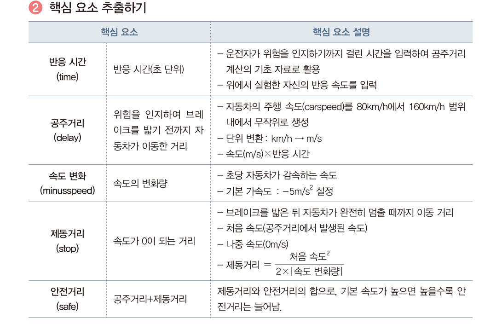<figcaption><b>교과서 38쪽</b> 핵심 요소 추출하기 — 여섯 개 변수와 각각의 계산 방법</figcaption></figure>
   <p style="margin-top:18px"><b>③ 알고리즘 설계 — 입력 · 처리 · 출력</b></p>
   <div class="flow">
    <div class="fstep"><div class="n">입력</div><div class="t">자신의 반응 시간</div><div class="d">실수형</div></div>
    <div class="fstep"><div class="n">처리</div><div class="t">안전거리 구하기</div><div class="d">단위 변환 → 공주거리 → 제동거리 → 안전거리 → 판정</div></div>
    <div class="fstep"><div class="n">출력</div><div class="t">계산 결과와 판정</div><div class="d">속도 · 공주거리 · 제동거리 · 안전거리 · 사고 여부</div></div>
   </div>
   <figure class="fig">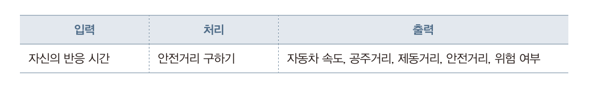<figcaption><b>교과서 39쪽</b> 입력 · 처리 · 출력 정리</figcaption></figure>
   <figure class="fig">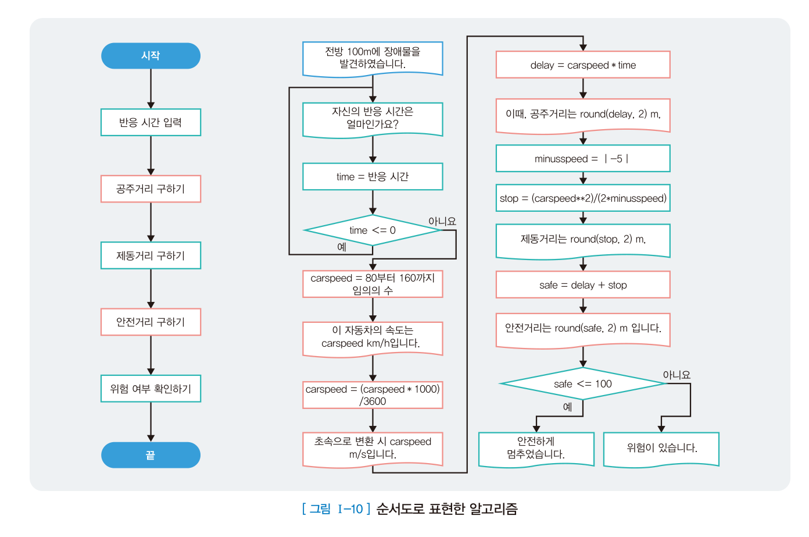<figcaption><b>교과서 39쪽 · 그림 Ⅰ-10</b> 순서도로 표현한 알고리즘 — 마름모는 조건 분기입니다. 눌러서 확대해 보세요.</figcaption></figure>
   <div class="ask"><div class="ah">발문</div>
    순서도에 마름모(조건)가 <b>두 개</b> 있습니다. 각각 무엇을 판단하고 있나요? 그중 하나를 빼면 프로그램은 어떻게 잘못 동작할까요?</div>`,
  pages:[{p:38,t:"2단계 탐구 계획 · 문제 구조화와 핵심 요소 추출"},{p:39,t:"2단계 탐구 계획 · 해결 방법 정리와 알고리즘 설계"}]},
 {n:"03",h:"3단계 · 실행 및 탐구 — 프로그램 작성",
  lead:"설계한 알고리즘을 파이썬으로 옮깁니다. 교과서의 전체 코드입니다.",
  code:[{name:"안전거리.py",src:`import random

time = 0          # 반응 시간
carspeed = 0      # 자동차 속도
delay = 0         # 공주거리
minusspeed = 0    # 속도 변화
stop = 0          # 제동거리
safe = 0          # 안전거리

print('전방 100m에 장애물을 발견하였습니다!')

# 반응 시간 입력
time = float(input('자신의 반응 시간은 얼마인가요?'))
if time <= 0:
    time = float(input('자신의 반응 시간은 얼마인가요?'))

# 자동차의 속도를 랜덤으로 발생
carspeed = random.randint(80, 160)
print('이 자동차의 속도는', carspeed, 'km/h 입니다.')

# 자동차 속도 변환 (km/h -> m/s)
carspeed = carspeed * 1000 / 3600
print('초속으로 변환 시', round(carspeed, 2), 'm/s 입니다.')

# 공주거리 계산
delay = carspeed * time
print('이때 공주거리는', round(delay, 2), 'm,')

# 속도 변화 입력 및 제동거리 계산
minusspeed = 5
stop = carspeed ** 2 / (2 * minusspeed)
print('제동거리는', round(stop, 2), 'm,')

# 안전거리 계산
safe = delay + stop
print('안전거리는', round(safe, 2), 'm 입니다.')

# 사고 여부 출력
if safe <= 100:
    print('안전하게 멈추었습니다!')
else:
    print('위험이 있습니다.')`}],
after:`<figure class="fig">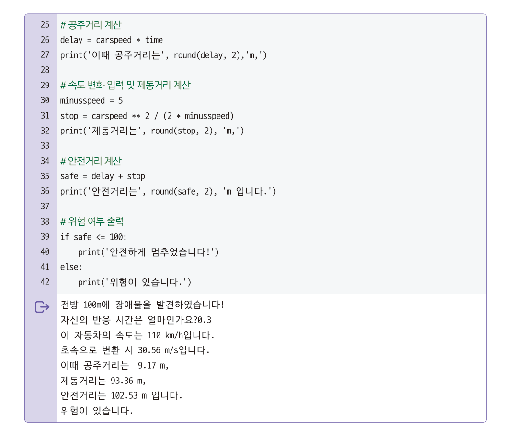<figcaption><b>교과서 41쪽</b> 프로그램 실행 결과 — 반응 시간 0.3초, 속도 110km/h를 넣었을 때의 출력</figcaption></figure><div class="box"><b>왜 <span style="font-family:var(--mono)">carspeed * 1000 / 3600</span> 인가?</b>
   km를 m로 바꾸려면 1000을 곱하고, 시(hour)를 초(second)로 바꾸려면 3600으로 나눕니다. 단위 변환은 <b>수학</b>의 몫입니다.<br><br>
   <b>왜 <span style="font-family:var(--mono)">carspeed ** 2 / (2 * minusspeed)</span> 인가?</b>
   등가속도 운동에서 나중 속도가 0일 때 이동 거리는 처음 속도의 제곱을 <b>2 × 감속도</b>로 나눈 값입니다. 제동거리가 속력의 <b>제곱</b>에 비례하는 이유가 여기 있습니다. 이 부분은 <b>과학</b>의 몫입니다.<br><br>
   그리고 입력을 받고 조건에 따라 다른 결과를 출력하는 것은 <b>정보</b>의 몫입니다. 하나의 프로그램 안에 세 교과가 들어 있습니다.</div>`},
 {n:"04",h:"먼저 내 반응 시간을 재 보자",
  lead:"교과서 39쪽은 공주거리를 구할 때 <b>&ldquo;위에서 실험한 자신의 반응 속도를 입력&rdquo;</b>하라고 합니다. 프로그램에 넣을 값을 지금 직접 측정합니다.",
  html:`<div class="doit"><div class="dh">반응 시간 측정 <span class="m">3회 측정 · 평균 사용</span></div>
   <p>아래 상자가 <b>빨간색에서 초록색으로 바뀌는 순간</b> 최대한 빨리 누르세요. 초록으로 바뀌기 전에 누르면 실패입니다.</p></div>
  <div class="sim">
    <div id="rtBox" style="border-radius:4px;padding:44px 20px;text-align:center;cursor:pointer;user-select:none;background:rgba(255,255,255,.05);border:1px solid var(--line2);transition:background .05s">
      <div id="rtMsg" style="font-family:var(--serif);font-size:22px;font-weight:800">눌러서 시작</div>
      <div id="rtSub" style="font-size:12.5px;color:var(--mut);margin-top:8px">상자를 누르면 준비가 시작됩니다</div>
    </div>
    <div class="simout" style="margin-top:14px">
      <div><div class="l">1회</div><div class="v" id="rt1">—</div></div>
      <div><div class="l">2회</div><div class="v" id="rt2">—</div></div>
      <div><div class="l">3회</div><div class="v" id="rt3">—</div></div>
      <div><div class="l">평균</div><div class="v" id="rtAvg">—</div></div>
    </div>
    <div style="display:flex;gap:8px;flex-wrap:wrap;margin-top:12px">
      <button class="tbtn" id="rtUse" disabled style="opacity:.4">이 값을 아래 시뮬레이터에 넣기</button>
      <button class="tbtn ghost" id="rtReset">다시 측정</button>
    </div>
  </div>
  <div class="box"><b>참고</b> · 여기서 재는 것은 <b>화면을 보고 손가락을 누르기까지</b> 걸린 시간입니다.
  실제 운전에서는 위험을 <b>인지</b>하고 발을 옮겨 브레이크를 <b>밟기</b>까지 걸리므로 보통 <b>0.7~1.0초</b>로 봅니다.
  교과서 예시가 0.3~0.5초를 쓰는 것은 계산을 단순화한 것이며, 실제 반응 시간을 넣으면 안전거리는 훨씬 길어집니다.</div>
  <div class="ask"><div class="ah">발문</div>
   내 반응 시간이 0.3초에서 0.9초로 <b>세 배</b>가 되면 공주거리는 몇 배가 될까요? 제동거리는 어떻게 될까요? 아래 시뮬레이터로 확인해 보세요.</div>`},
 {n:"05",h:"직접 계산해 보기 — 안전거리 시뮬레이터",
  lead:"반응 시간과 속도를 바꾸며 결과가 어떻게 달라지는지 확인해 보세요. 교과서의 검증 표(반응 시간 0.3 / 0.4 / 0.5)를 그대로 재현할 수 있습니다.",
  html:`<div class="sim">
    <div class="row">
      <div class="fld"><label>반응 시간 (초)</label><input type="number" id="siTime" value="0.3" step="0.1" min="0.1" max="3"></div>
      <div class="fld"><label>자동차 속도 (km/h)</label><input type="number" id="siSpeed" value="110" step="1" min="10" max="200"></div>
      <div class="fld"><label>감속도 (m/s²)</label><input type="number" id="siDecel" value="5" step="0.5" min="1" max="15"></div>
      <div class="fld"><label>장애물까지 거리 (m)</label><input type="number" id="siDist" value="100" step="10" min="10" max="400"></div>
      <div class="fld" style="flex:0 0 auto"><button class="tbtn" id="siRand">속도 무작위 (80~160)</button></div>
    </div>
    <div class="simout">
      <div><div class="l">초속 변환</div><div class="v" id="oVms">—<small>m/s</small></div></div>
      <div><div class="l">공주거리</div><div class="v" id="oDelay">—<small>m</small></div></div>
      <div><div class="l">제동거리</div><div class="v" id="oStop">—<small>m</small></div></div>
      <div><div class="l">안전거리</div><div class="v" id="oSafe">—<small>m</small></div></div>
    </div>
    <div class="verdict" id="oVerdict">—</div>
    <div class="track"><div class="trbar" id="oBar">
      <i class="d" id="barD"></i><i class="s" id="barS"></i><span class="trline" id="barLine"></span></div>
      <div class="trlbl"><span>0 m</span><span id="barMax">—</span></div>
      <div class="leg"><span><i style="background:rgba(127,168,212,.7)"></i>공주거리</span>
        <span><i style="background:rgba(216,180,90,.7)"></i>제동거리</span>
        <span><i style="background:#d98a7a;width:2px;height:11px"></i>장애물 위치</span></div>
    </div>
  </div>
  <figure class="fig">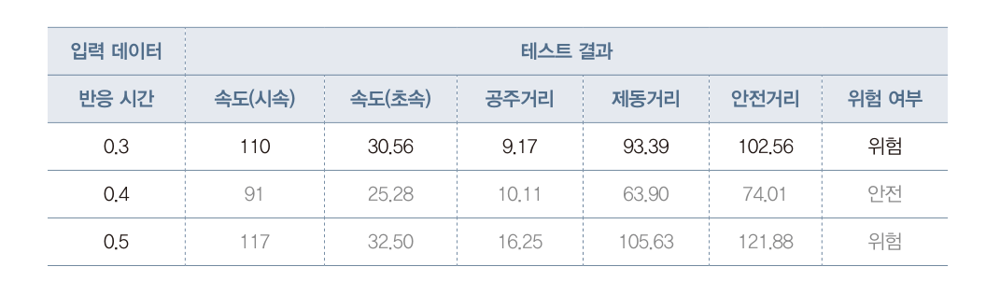<figcaption><b>교과서 41쪽</b> 결과 확인 — 반응 시간 0.3 / 0.4 / 0.5초일 때의 테스트 결과. 위 시뮬레이터에 같은 값을 넣으면 그대로 재현됩니다. 안전거리가 100m를 넘으면 <b>위험</b>입니다.</figcaption></figure>
   <div class="box"><b>결과 확인</b> · 주행 중인 자동차가 안전하게 멈추려면 어떤 조건이 필요한가?
   <ul><li>장애물까지의 거리는 <b>멀어야</b> 한다.</li><li>반응 시간은 <b>짧아야</b> 한다.</li><li>자동차 속도는 <b>느려야</b> 한다.</li></ul></div>
   <div class="doit"><div class="dh">해 보기 <span class="m">5분 · 시뮬레이터</span></div>
    <p><b>① 속도의 힘 확인하기</b> — 반응 시간을 0.5초로 고정하고 속도를 60 → 80 → 100 → 120km/h로 올려 보세요. 안전거리가 <b>일정하게</b> 늘어납니까, 아니면 <b>점점 더 빠르게</b> 늘어납니까?<br>
    <b>② 빗길 재현하기</b> — 감속도를 5에서 <b>3</b>으로 낮춰 보세요. 젖은 노면에서 마찰이 줄어든 상황입니다. 같은 속도에서 안전거리가 얼마나 늘어납니까?<br>
    <b>③ 도로교통공단 규칙 검증하기</b> — 속도를 80km/h, 장애물까지 거리를 80m로 두고 반응 시간을 바꿔 보세요. 어느 반응 시간까지 안전합니까?</p></div>`,
  pages:[{p:40,t:"3단계 실행 및 탐구 · 프로그램 입출력 설계와 작성"},{p:41,t:"3단계 실행 및 탐구 · 결과 확인"}]},
 {n:"06",h:"4단계 · 결과 공유 및 성찰",
  html:`<p><b>(1) 개선점 — 프로그램 변형</b></p>
  <p>자동차의 감속 정도는 차량마다 다릅니다. 감속 정도를 <b>입력받도록</b> 바꾸면 더 현실적인 프로그램이 됩니다.</p>`,
  code:[{name:"변형 — 감속도를 입력받기",src:`minusspeed = float(input('자동차의 감속 정도는 얼마인가요?'))`}],
  after:`<p style="margin-top:14px"><b>(2) 개선점 — 프로그램 확장</b></p>
  <p>자동차가 멈추기 위해서는 타이어와 표면 사이의 <b>마찰력</b> 또한 매우 중요합니다. 표면 마찰력을 고려하면 더 정확한 정지거리를 계산하는 프로그램을 만들 수 있습니다.
  장마철 빗길에서 위험했던 이유가 바로 이것입니다.</p>
  <figure class="fig">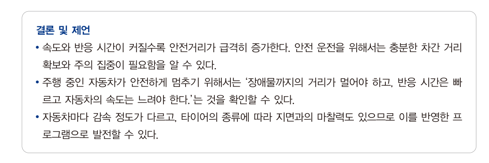<figcaption><b>교과서 42쪽</b> 결론 및 제언</figcaption></figure>
  <div class="box" style="border-left:2px solid var(--accent);margin-top:14px"><b>결론 및 제언</b>
  <ul>
   <li>속도와 반응 시간이 커질수록 안전거리가 <b>급격히</b> 증가한다. 안전 운전을 위해서는 충분한 차간 거리 확보와 주의 집중이 필요하다.</li>
   <li>주행 중인 자동차가 안전하게 멈추려면 장애물까지의 거리가 멀어야 하고, 반응 시간은 빠르고, 자동차의 속도는 느려야 한다.</li>
   <li>자동차마다 감속 정도가 다르고 타이어 종류에 따라 지면과의 마찰력도 다르므로, 이를 반영한 프로그램으로 발전할 수 있다.</li>
  </ul></div>
  <div class="box tip"><b>지금 본 것이 융합 프로젝트의 전체 모습입니다.</b>
  신문 기사(사회) → 관성과 등가속도(과학) → 단위 변환과 이차식(수학) → 입력·조건·출력(정보) → 개선과 확장(성찰).
  오늘 과제에서 여러분이 정할 주제도 이렇게 끝까지 갈 수 있는 것이어야 합니다.</div>`,
  pages:[{p:42,t:"4단계 결과 공유 및 성찰 · 주요 개념 정리하기"}]}],
 quiz:[
 {q:"공주거리에 대한 설명으로 옳은 것은?",
  opts:["브레이크가 작동하기 시작한 순간부터 완전히 정지할 때까지의 거리","운전자가 위험을 인지하고 브레이크를 밟아 자동차가 멈추기 시작할 때까지 움직인 거리","공주거리와 제동거리를 합한 전체 거리","자동차가 완전히 정지한 뒤 미끄러진 거리"],
  a:1,why:"①은 제동거리, ③은 안전거리의 정의입니다. 공주거리는 <b>인지에서 제동 시작까지</b> 움직인 거리로, <b>속도 × 반응 시간</b>으로 계산합니다."},
 {q:"시속 110km를 초속으로 바꾸는 식으로 옳은 것은?",
  opts:["110 × 3600 ÷ 1000","110 × 1000 ÷ 3600","110 ÷ 1000 × 3600","110 × 1000 × 3600"],
  a:1,why:"km를 m로 바꾸려면 1000을 곱하고, 시(hour)를 초(second)로 바꾸려면 3600으로 나눕니다. 110 × 1000 ÷ 3600 ≒ 30.56 m/s."},
 {q:"속도가 두 배가 될 때 제동거리는 대략 몇 배가 되는가? (감속도는 동일)",
  opts:["변하지 않는다","2배","4배","√2배"],
  a:2,why:"제동거리는 속력의 <b>제곱</b>에 비례합니다(v²/2a). 속도가 2배면 제동거리는 4배가 됩니다. 과속이 위험한 수학적 이유입니다."}]},

/* ============ 4. 과제 ============ */
{kind:"task",nav:"과제",mins:60,title:"나만의 융합 프로젝트 주제 정하기",
 sub:"12차시 · 교과서 43쪽 역량 키우기 활동. 오늘 정한 주제가 11월 성과공유회까지 이어집니다. 수업 시간 안에 끝내는 것을 목표로 합니다.",
 sections:[
 {n:"01",h:"활동 안내",
  lead:"생활 속에서 불편하거나 개선이 필요한 문제를 떠올려 보세요. 그 문제는 과학적 원리로 원인을 밝히거나, 수학적 계산으로 데이터를 분석하며, 사회적 관점이나 정보 기술, 예술적 표현을 통해 해결할 수도 있습니다.",
  html:`<div class="box warn"><b class="t">중요</b>융합 프로젝트의 주제는 단순한 아이디어가 아니라, <b>실제로 탐구하고 해결할 수 있는 문제</b>여야 합니다.
   &ldquo;환경을 지키자&rdquo;는 주제가 될 수 없습니다. &ldquo;우리 학교 급식 잔반량을 요일별로 측정해 예측 모델을 만든다&rdquo;는 주제가 됩니다.</div>
  <div class="flow" style="margin-top:16px">
   <div class="fstep"><div class="n">STEP 1</div><div class="t">문제 떠올리기</div><div class="d">관심 있는 사회적 · 환경적 · 생활 속 문제를 떠올린다</div></div>
   <div class="fstep"><div class="n">STEP 2</div><div class="t">교과 지식 정리</div><div class="d">문제를 해결하는 데 필요한 지식을 교과별로 정리한다</div></div>
   <div class="fstep"><div class="n">STEP 3</div><div class="t">핵심 질문 만들기</div><div class="d">프로젝트의 핵심 질문을 만든다</div></div>
   <div class="fstep"><div class="n">STEP 4</div><div class="t">한 문장으로</div><div class="d">주제를 한 문장으로 정리한다</div></div>
  </div>
  <figure class="fig">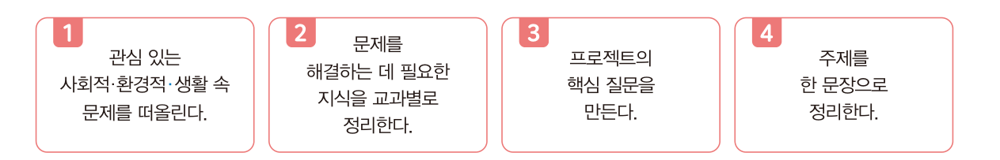<figcaption><b>교과서 43쪽</b> 주제를 정하는 네 단계 절차</figcaption></figure>
  <div class="lbl">교과서 43쪽 · 주제를 확정하기 전 네 가지 확인</div>
  <p>주제를 정하기 전에 네 가지를 스스로 확인합니다. <b>하나라도 아니오</b>가 나오면 그 주제는 아직 다듬어야 합니다.</p>
  <figure class="fig">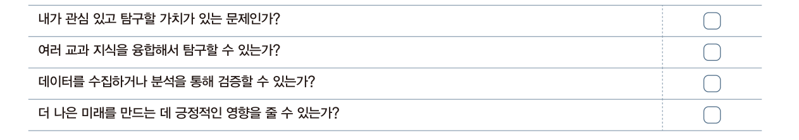<figcaption><b>교과서 43쪽</b> 주제 선정 확인 사항 — 활동지를 쓰기 전에 네 가지를 스스로 물어보세요.</figcaption></figure>
  <figure class="fig">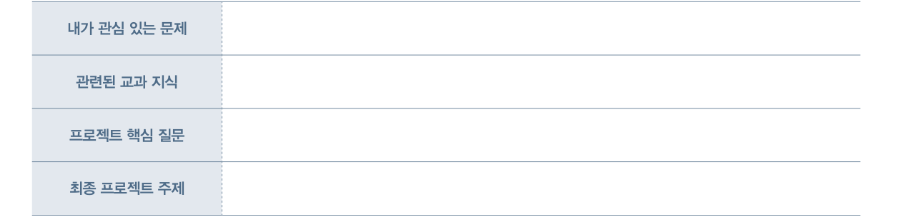<figcaption><b>교과서 43쪽</b> 생각 정리 — 활동지 1 · 3 · 5 · 6번 칸이 이 네 칸에 대응합니다.</figcaption></figure>`,
  pages:[{p:43,t:"역량 키우기 활동 — 나만의 융합 프로젝트 주제 정하기"}]},
 {n:"02",h:"주제 예시 — 교과서 31쪽",
  lead:"각 주제가 <b>핵심 질문 · 융합 교과 영역 · SDGs</b> 세 가지를 모두 갖추고 있다는 점에 주목하세요. 여러분의 주제도 이 세 가지를 갖춰야 합니다.",
  html:`<div class="tw"><table style="min-width:640px">
   <thead><tr><th style="width:180px">주제</th><th>핵심 질문</th><th style="width:170px">융합 교과 영역</th><th style="width:140px">SDGs</th></tr></thead>
   <tbody>
    <tr><td><b>학생 운동 습관과<br>건강 데이터 분석</b></td><td>운동량과 건강 상태는 어떤 관계가 있을까?</td><td>체육, 과학(생리학), 수학</td><td>3. 건강과 웰빙</td></tr>
    <tr><td><b>학습 격차 해소를 위한<br>학습 자료 제작</b></td><td>다양한 학생들이 공평하게 학습 기회를 얻기 위해서는 어떤 자료와 방법이 필요할까?</td><td>사회, 국어, 정보</td><td>4. 양질의 교육</td></tr>
    <tr><td><b>플라스틱 쓰레기<br>줄이기 캠페인</b></td><td>플라스틱 사용을 줄이고 재활용을 늘리려면 어떤 실천이 필요할까?</td><td>과학(화학), 환경, 미술, 사회(도덕)</td><td>12. 책임 있는 소비와 생산</td></tr>
    <tr><td><b>멸종 위기 동물<br>보호 캠페인</b></td><td>멸종 위기 동물을 보호하기 위해 우리가 실천할 수 있는 일은 무엇일까?</td><td>생물, 사회, 미술, 국어</td><td>15. 육상 생태계 보존</td></tr>
   </tbody></table></div>
   <figure class="fig">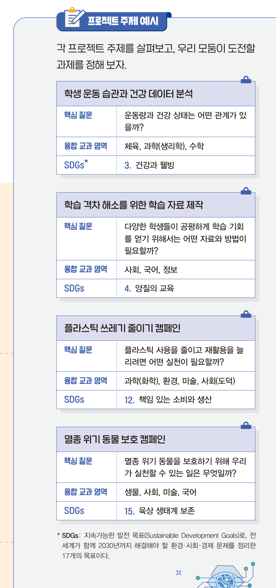<figcaption><b>교과서 31쪽</b> 프로젝트 주제 예시 — 네 주제 모두 핵심 질문 · 융합 교과 영역 · SDGs를 갖추고 있습니다.</figcaption></figure>
   <div class="box tip"><b>이 강좌의 방향</b> · 이 강좌에서는 <b>센서로 데이터를 모으거나</b>, <b>공공데이터를 분석하거나</b>, <b>이미지를 분류하는</b> 방식으로 문제를 풀게 됩니다.
   주제를 정할 때 &ldquo;<b>내가 모을 수 있거나 구할 수 있는 데이터가 있는가</b>&rdquo;를 반드시 확인하세요.
   <br><br>참고할 만한 데이터 출처 · 공공데이터포털 / 국가통계포털(KOSIS) / SGIS 통계지리정보 / 기상청 / 교육정보 개방 포털(급식·학사) / 마이크로비트 직접 센싱</div>`},
 {n:"03",h:"좋은 주제와 아쉬운 주제",
  html:`<div class="grid g2">
   <div class="card" style="border-color:rgba(139,192,164,.3)"><h4 style="color:var(--green)">좋은 주제</h4>
    <p>· 우리 교실의 온도와 이산화탄소 농도를 측정해 <b>집중력이 떨어지는 시점</b>을 예측한다</p>
    <p>· 대전 지역 버스 정류장 데이터를 분석해 <b>배차가 부족한 시간대</b>를 찾는다</p>
    <p>· 급식 잔반량을 메뉴 · 요일별로 기록해 <b>잔반이 많은 메뉴</b>를 예측한다</p>
    <p style="margin-top:9px;color:var(--dim)">→ 측정할 수 있고, 데이터가 있고, 결과를 확인할 수 있다</p></div>
   <div class="card" style="border-color:rgba(217,138,122,.3)"><h4 style="color:var(--rose)">아쉬운 주제</h4>
    <p>· 인공지능으로 <b>세계 평화</b>를 이룬다</p>
    <p>· <b>완벽한</b> 자율주행 자동차를 만든다</p>
    <p>· 환경 오염의 <b>모든</b> 원인을 분석한다</p>
    <p style="margin-top:9px;color:var(--dim)">→ 측정할 수 없고, 범위가 너무 넓고, 12회차 안에 끝낼 수 없다</p></div>
  </div>`}],
 worksheet:{title:"나만의 융합 프로젝트 주제 제안서 v1",
  desc:"아래 일곱 칸을 채우면 제안서가 완성됩니다. 입력하는 즉시 저장되므로 중간에 창을 닫아도 괜찮습니다. 다 쓴 뒤 <b>txt 내려받기</b>로 저장해 파일 이름에 자신의 이름을 붙여 제출하세요.",
  fields:[
  {label:"1. 내가 발견한 문제",req:1,rows:3,hint:"생활 속에서 불편하거나 개선이 필요하다고 느낀 문제를 구체적으로 씁니다. 장소 · 대상 · 상황이 드러나야 합니다.",ph:"예) 우리 학교 5교시 교실이 너무 더워서 수업에 집중하기 어렵다."},
  {label:"2. 왜 문제인가 · 누가 불편한가",req:1,rows:3,hint:"이것이 나만의 불편함인지, 여러 사람의 문제인지 근거를 들어 설명합니다.",ph:"예) 우리 반 28명 중 다수가 오후 수업에 졸음을 느낀다고 답했다. 냉방을 켜도 창가와 복도쪽 온도 차가 크다."},
  {label:"3. 필요한 교과 지식 (교과별로 정리)",req:1,rows:4,hint:"과학 · 수학 · 정보 · 사회 · 국어 · 미술 등에서 어떤 지식이 필요한지 교과별로 나누어 적습니다. 도시 열섬 사례의 표를 참고하세요.",ph:"예) 과학 — 열의 이동과 복사, 이산화탄소 농도와 집중력의 관계 / 수학 — 평균·상관관계 분석 / 정보 — 센서 데이터 기록, 그래프 시각화"},
  {label:"4. 활용할 데이터와 기술",req:1,rows:3,hint:"어떤 데이터를 어디서 구할 것인지, 직접 측정한다면 무엇으로 측정할 것인지 적습니다. 데이터를 구할 수 없으면 그 주제는 진행할 수 없습니다.",ph:"예) 마이크로비트 온도 센서로 자리별 온도를 10분 간격으로 기록. 기상청 API로 그날의 외부 기온을 함께 수집."},
  {label:"5. 프로젝트의 핵심 질문",req:1,rows:2,hint:"물음표로 끝나는 한 문장. 답이 예/아니요로 끝나지 않고, 데이터로 답할 수 있어야 합니다.",ph:"예) 교실 안의 위치와 시간에 따라 온도는 얼마나 차이 나며, 그 차이는 집중도와 어떤 관계가 있을까?"},
  {label:"6. 주제를 한 문장으로",req:1,rows:2,hint:"[무엇을] [어떻게] 하여 [무엇을] 해결한다 — 형식으로 씁니다.",ph:"예) 교실 자리별 온도 데이터를 센서로 수집하고 분석하여, 냉방 위치와 환기 시점을 제안하는 프로그램을 만든다."},
  {label:"7. 네 단계 계획 초안",req:1,rows:5,hint:"문제 인식 / 탐구 계획 / 실행 및 탐구 / 결과 공유 및 성찰 — 각 단계에서 무엇을 할지 한 줄씩 적습니다.",ph:"1 문제 인식 —\n2 탐구 계획 —\n3 실행 및 탐구 —\n4 결과 공유 및 성찰 —"},
  {label:"8. 예상 산출물",rows:2,hint:"11월 성과공유회에서 무엇을 보여 줄 것인지 적습니다.",ph:"예) 자리별 온도 지도 웹페이지 + 환기 시점 알림 마이크로비트 장치 + 분석 보고서"}]},
 rubric:{title:"활동지 채점 기준표 — 나만의 융합 프로젝트 주제 제안서",
  area:"영역 1 · 융합프로젝트를 위한 기술", areaPoints:30, when:"평가시기 8~9월 · 9~12차시",
  items:[
  {n:"문제 정의의 구체성",pt:5,
   hi:"장소 · 대상 · 상황이 드러나게 문제를 서술하고, 여러 사람의 문제임을 <b>근거를 들어</b> 보였다.",
   mid:"문제를 서술했으나 범위가 넓거나 근거가 개인의 느낌에 머문다.",
   lo:"문제가 막연하고 대상이 불분명하다."},
  {n:"교과 지식의 융합",pt:5,
   hi:"두 개 이상 교과의 지식을 각각 <b>어떤 역할로</b> 쓸지 구분해 제시했다.",
   mid:"여러 교과를 나열했으나 역할 구분이 약하다.",
   lo:"한 교과에만 머물거나 교과 연결이 없다."},
  {n:"데이터 확보 가능성",pt:5,
   hi:"구체적인 출처(사이트명 · 측정 방법)를 제시했고 실제로 구할 수 있음을 확인했다.",
   mid:"데이터를 언급했으나 출처가 막연하다.",
   lo:"데이터 계획이 없다."},
  {n:"핵심 질문의 적절성",pt:5,
   hi:"물음표로 끝나며 <b>데이터로 답할 수 있고</b> 예/아니요로 끝나지 않는 질문이다.",
   mid:"질문 형태이나 데이터로 검증하기 어렵거나 너무 넓다.",
   lo:"질문이 없거나 조사 수준에 그친다."},
  {n:"실행 계획의 완결성",pt:5,
   hi:"네 단계 계획과 예상 산출물이 이어지며, 12회차 안에 <b>시연 가능한</b> 형태다.",
   mid:"계획을 세웠으나 일부 단계가 비었거나 산출물이 모호하다.",
   lo:"계획이 없다."}],
  note:"이 활동지 <b>25점</b>은 영역 1(융합프로젝트를 위한 기술, 30점) 중 <b>8점</b>으로 환산합니다. (환산 점수 = 활동지 점수 ÷ 25 × 8, 소수 첫째 자리 반올림)<br><b>제출하지 않으면 0점</b>이며, 마감 후 1주 이내 재제출은 배점의 80%까지 인정합니다."},
 tail:`<div class="box task" style="margin-top:20px"><span class="tag b">제출</span>
  <b>제출물</b> · 주제 제안서 v1 (txt 또는 문서 파일 1개)<br>
  <b>파일 이름</b> · <span style="font-family:var(--mono)">2회차_주제제안서_학교명_이름</span><br>
  <b>제출 경로</b> · 구글 드라이브 공유 폴더 &gt; 2회차<br>
  <b>마감</b> · 오늘 수업 종료 시각(21:00)까지. 이 제안서는 최종 보고서 1장 &lsquo;연구 주제 및 문제 정의&rsquo;의 초안으로 그대로 이어집니다.</div>`},

/* ============ 5. 토의 ============ */
{kind:"talk",nav:"토의",mins:30,title:"서로의 주제를 검증하기",
 sub:"소회의실 15분 → 전체 공유 15분. 좋은 주제는 혼자 만들어지지 않습니다.",
 sections:[
 {n:"01",h:"진행 방식",
  html:`<div class="flow">
   <div class="fstep"><div class="n">0~2분</div><div class="t">소회의실 배정</div><div class="d">3인 1조 · 서로 다른 학교 학생끼리 편성</div></div>
   <div class="fstep"><div class="n">2~14분</div><div class="t">한 사람당 4분</div><div class="d">발표 1분 + 질문과 답 3분</div></div>
   <div class="fstep"><div class="n">14~15분</div><div class="t">대표 주제 선정</div><div class="d">조에서 가장 발전 가능성이 큰 주제 1개</div></div>
   <div class="fstep"><div class="n">15~30분</div><div class="t">전체 공유</div><div class="d">조별 대표 30초 피칭 + 교사 피드백</div></div>
  </div>
  <div class="box" style="margin-top:16px"><b>발표하는 사람은 이 순서로 말합니다</b>
  <ol><li>내가 발견한 문제는 무엇인가 (20초)</li><li>내 핵심 질문은 무엇인가 (20초)</li><li>어떤 데이터로 답할 것인가 (20초)</li></ol></div>`},
 {n:"02",h:"반드시 던져야 하는 두 가지 질문",
  html:`<div class="grid g2">
   <div class="card"><h4>질문 1 — 데이터를 실제로 구할 수 있는가?</h4>
    <p>어디서, 어떻게, 얼마나 모을 것인지 구체적으로 되물어 주세요.
    &ldquo;인터넷에 있을 것 같다&rdquo;는 답은 통과시키지 않습니다. <b>사이트 이름이나 측정 방법</b>이 나와야 합니다.</p></div>
   <div class="card"><h4>질문 2 — 이건 정말 문제인가?</h4>
    <p>나만의 불편함인지, 여러 사람의 문제인지 물어 주세요.
    &ldquo;몇 명이 그렇게 느끼는가&rdquo;, &ldquo;그 근거는 무엇인가&rdquo;를 되물으면 주제가 훨씬 단단해집니다.</p></div>
  </div>`},
 {n:"03",h:"토의 논제",
  html:`<div class="box talk"><span class="tag g">논제 1</span>
   <b>주제를 좁히는 것과 넓히는 것 중 무엇이 더 어려운가?</b><br>
   조원의 주제 중 하나를 골라, 지금보다 <b>절반으로 좁힌 버전</b>을 함께 만들어 보세요. 무엇이 사라지고 무엇이 남는지 확인합니다.</div>
  <div class="box talk" style="margin-top:12px"><span class="tag g">논제 2</span>
   <b>내 주제에서 &lsquo;융합&rsquo;은 어디에 있는가?</b><br>
   안전거리 사례에서는 과학(관성) · 수학(단위 변환, 이차식) · 정보(조건과 출력)가 각각 맡은 자리가 있었습니다.
   내 주제에서 각 교과가 맡을 자리를 한 문장씩 말해 보세요. 한 교과만 나온다면 아직 융합 프로젝트가 아닙니다.</div>
  <div class="box talk" style="margin-top:12px"><span class="tag g">논제 3</span>
   <b>이 주제를 11월까지 끌고 갈 수 있는가?</b><br>
   12회차 뒤에 <b>무엇을 시연할 수 있을지</b> 서로에게 설명해 보세요. 시연할 것을 그리지 못하면 주제를 바꿔야 합니다.</div>`}],
 worksheet:{title:"토의 기록",
  desc:"소회의실에서 받은 질문과 그에 따라 바꿀 점을 정리합니다. 이 기록도 수행평가 관찰 근거가 됩니다.",
  fields:[
  {label:"1. 내가 받은 질문 중 가장 뼈아팠던 것",rows:3,hint:"질문을 그대로 옮겨 적고, 그때 내가 어떻게 답했는지도 적습니다."},
  {label:"2. 그래서 주제에서 바꿀 점",rows:3,hint:"범위 · 데이터 · 핵심 질문 중 무엇을 어떻게 바꿀지 구체적으로."},
  {label:"3. 다른 사람 주제 중 배우고 싶은 점",rows:2,hint:"누구의 어떤 점이 좋았는지, 내 주제에 어떻게 적용할지."},
  {label:"4. 우리 조 대표 주제와 선정 이유",rows:2,hint:"전체 공유 때 발표할 내용입니다."}]}},

/* ============ 6. 정리 ============ */
{kind:"close",nav:"정리",mins:30,title:"개념 정리와 오늘의 점검",
 sub:"12차시 마무리 — 융합 프로젝트의 이해 개념 정리하기. 교과서 42쪽.",
 sections:[
 {n:"01",h:"주요 개념 정리하기",
html:`<figure class="fig">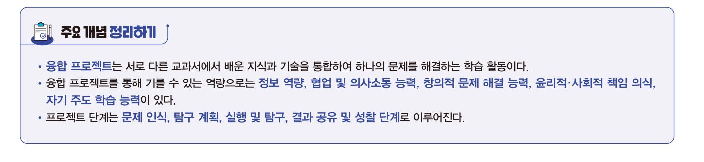<figcaption><b>교과서 42쪽</b> 주요 개념 정리하기</figcaption></figure>
  <div class="box" style="border-left:2px solid var(--accent)">
   <ul>
    <li><b class="hl">융합 프로젝트</b>는 서로 다른 교과에서 배운 지식과 기술을 통합하여 하나의 문제를 해결하는 학습 활동이다.</li>
    <li>융합 프로젝트를 통해 기를 수 있는 역량으로는 <b>정보 역량, 협업 및 의사소통 능력, 창의적 문제 해결 능력, 윤리적 · 사회적 책임 의식, 자기 주도 학습 능력</b>이 있다.</li>
    <li>프로젝트 단계는 <b>문제 인식 → 탐구 계획 → 실행 및 탐구 → 결과 공유 및 성찰</b> 단계로 이루어진다.</li>
   </ul></div>
   <div class="grid g4" style="margin-top:16px">
    <div class="card"><h4>공주거리</h4><p>인지 → 제동 시작까지 이동 거리<br><span style="font-family:var(--mono);color:var(--accent)">속도 × 반응 시간</span></p></div>
    <div class="card"><h4>제동거리</h4><p>제동 시작 → 완전 정지까지 거리<br><span style="font-family:var(--mono);color:var(--accent)">속도² ÷ (2 × 감속도)</span></p></div>
    <div class="card"><h4>안전거리</h4><p>둘을 합한 전체 거리<br><span style="font-family:var(--mono);color:var(--accent)">공주거리 + 제동거리</span></p></div>
    <div class="card"><h4>주제의 조건</h4><p>핵심 질문 · 융합 교과 · 구할 수 있는 데이터</p></div>
   </div>`},
 {n:"02",h:"오늘 남긴 것",
  html:`<div class="tw"><table style="min-width:520px">
   <thead><tr><th style="width:130px">산출물</th><th>내용</th><th style="width:140px">이후 쓰임</th></tr></thead>
   <tbody>
    <tr><td><b>주제 제안서 v1</b></td><td>문제 · 근거 · 교과 지식 · 데이터 · 핵심 질문 · 한 문장 주제 · 4단계 계획 · 예상 산출물</td><td>최종 보고서 1장의 초안</td></tr>
    <tr><td><b>토의 기록</b></td><td>받은 질문과 수정할 점, 배우고 싶은 점</td><td>수행평가 관찰 기록 · 세특 근거</td></tr>
    <tr><td><b>개념 확인 결과</b></td><td>이 페이지의 확인 문제 정답 수</td><td>5회차 대단원 개념 점검 대비</td></tr>
   </tbody></table></div>`},
 {n:"03",h:"다음 시간 예고 — 3회차 (9/14 월)",
  html:`<div class="box"><b>데이터 분석과 인터랙티브 시각화 · 프롬프트 엔지니어링</b> (9~12차시)
   <ul>
    <li>정형 · 비정형 데이터와 결측치 처리</li>
    <li>인터랙티브 데이터 시각화 — 사용자가 조작할 수 있는 그래프 만들기</li>
    <li>프롬프트 엔지니어링 — 생성형 AI에게 제대로 시키는 법과 결과 검증</li>
   </ul>
   <b>준비물</b> · 구글 계정(코랩 사용) / 교과서 Ⅱ단원 / 오늘 정한 내 주제와 관련된 데이터 링크 하나<br>
   <b>미리 해 올 것</b> · 오늘 정한 주제의 데이터를 실제로 찾아 링크를 저장해 오세요. 3회차 실습에 그 데이터를 씁니다.</div>
   <div class="box warn" style="margin-top:12px"><b class="t">8/17 이후 3주 공백</b>
   다음 수업까지 4주가 비어 있습니다. 그 사이 주제가 흐려지기 쉬우므로, <b>주제와 관련된 데이터 링크를 찾아 두는 것</b>을 반드시 해 두세요. 이것이 3회차 실습의 재료가 됩니다.</div>`}],
 quiz:[
 {q:"융합 프로젝트를 통해 기를 수 있는 역량이 <b>아닌</b> 것은?",
  opts:["정보 역량","자기 주도 학습 능력","윤리적 · 사회적 책임 의식","단일 교과 심화 암기 능력"],
  a:3,why:"교과서 42쪽 주요 개념 정리에 제시된 역량은 정보 역량, 협업 및 의사소통 능력, 창의적 문제 해결 능력, 윤리적·사회적 책임 의식, 자기 주도 학습 능력입니다."},
 {q:"안전거리 프로젝트에서 &lsquo;공주거리와 제동거리를 계산하여 안전거리를 구해 주는 프로그램 만들기&rsquo;로 문제를 좁힌 것은 어느 단계인가?",
  opts:["문제 인식","탐구 계획","실행 및 탐구","결과 공유 및 성찰"],
  a:0,why:"<b>문제 인식</b> 단계입니다. 막연한 문제를 명확하게 정의하여 이후 탐구의 방향을 분명히 설정하는 것이 이 단계의 역할입니다."},
 {q:"융합 프로젝트의 주제로 가장 적절한 것은?",
  opts:["인공지능으로 세계의 모든 환경 문제를 해결한다","우리 학교 급식 잔반량을 메뉴와 요일별로 기록해 잔반이 많은 메뉴를 예측한다","완벽한 자율주행 자동차를 만든다","인공지능이 무엇인지 조사한다"],
  a:1,why:"주제는 <b>실제로 탐구하고 해결할 수 있는 문제</b>여야 합니다. ②는 측정할 데이터가 명확하고, 범위가 한정되어 있으며, 결과를 확인할 수 있습니다. ①③은 범위가 너무 넓고, ④는 조사에 그쳐 문제 해결이 없습니다."},
 {q:"다음 중 <b>탐구 계획</b> 단계에서 하는 일로 옳은 것은?",
  opts:["보고서와 발표 자료를 만들어 다른 모둠과 공유한다","해결할 가치가 있는 문제를 발견하고 명확하게 정의한다","모둠을 구성해 역할을 나누고, 사용할 도구와 데이터 수집 방법을 정한다","수집한 자료를 분석하며 계획을 수정하고 새로운 방법을 시도한다"],
  a:2,why:"①은 결과 공유 및 성찰, ②는 문제 인식, ④는 실행 및 탐구 단계입니다."},
 {q:"제동거리가 속력의 제곱에 비례하는 이유와 가장 관련이 깊은 개념은?",
  opts:["마찰력이 0이기 때문","관성과 등가속도 운동의 성질 때문","반응 시간이 일정하기 때문","자동차의 무게가 일정하기 때문"],
  a:1,why:"관성 때문에 자동차는 즉시 멈추지 못하며, 등가속도 운동에서 나중 속도가 0일 때 이동 거리는 v²/(2a)가 됩니다. 그래서 제동거리는 속력의 <b>제곱</b>에 비례합니다."}],}
]};
</script>
<script src="config.js?v=7"></script>
<script src="app.js?v=7"></script>
<script>
boot();
/* ---- 안전거리 시뮬레이터 ---- */
(function(){
  const $=id=>document.getElementById(id);
  function calc(){
    const t=parseFloat($("siTime").value)||0, kmh=parseFloat($("siSpeed").value)||0,
          a=parseFloat($("siDecel").value)||5, D=parseFloat($("siDist").value)||100;
    const v=kmh*1000/3600, delay=v*t, stop=(v*v)/(2*a), safe=delay+stop;
    $("oVms").innerHTML=v.toFixed(2)+"<small>m/s</small>";
    $("oDelay").innerHTML=delay.toFixed(2)+"<small>m</small>";
    $("oStop").innerHTML=stop.toFixed(2)+"<small>m</small>";
    $("oSafe").innerHTML=safe.toFixed(2)+"<small>m</small>";
    const ok=safe<=D, vd=$("oVerdict");
    vd.className="verdict "+(ok?"safe":"crash");
    vd.textContent=ok?"안전하게 멈추었습니다! (안전거리 "+safe.toFixed(2)+"m ≤ 장애물까지 "+D+"m)"
                     :"위험이 있습니다. (안전거리 "+safe.toFixed(2)+"m > 장애물까지 "+D+"m)";
    const max=Math.max(safe,D)*1.08;
    $("barD").style.left="0%"; $("barD").style.width=(delay/max*100)+"%";
    $("barS").style.left=(delay/max*100)+"%"; $("barS").style.width=(stop/max*100)+"%";
    $("barLine").style.left=(D/max*100)+"%";
    $("barMax").textContent=max.toFixed(0)+" m";
  }
  ["siTime","siSpeed","siDecel","siDist"].forEach(id=>$(id).addEventListener("input",calc));
  $("siRand").addEventListener("click",()=>{$("siSpeed").value=Math.floor(Math.random()*81)+80;calc();});
  window.__simCalc=calc;
  calc();
})();

/* ---- 반응 시간 측정기 ---- */
(function(){
  const $=id=>document.getElementById(id);
  const box=$("rtBox"),msg=$("rtMsg"),sub=$("rtSub");
  let state="idle",t0=0,timer=null,rec=[];
  const RED="rgba(217,138,122,.22)",GREEN="rgba(139,192,164,.28)",IDLE="rgba(255,255,255,.05)";
  function paint(){
    ["rt1","rt2","rt3"].forEach((id,i)=>$(id).innerHTML=rec[i]!==undefined?rec[i]+"<small>ms</small>":"—");
    if(rec.length===3){
      const avg=rec.reduce((a,b)=>a+b,0)/3;
      $("rtAvg").innerHTML=(avg/1000).toFixed(2)+"<small>초</small>";
      $("rtUse").disabled=false;$("rtUse").style.opacity="1";
      $("rtUse").dataset.v=(avg/1000).toFixed(2);
    }else{$("rtAvg").innerHTML="—";$("rtUse").disabled=true;$("rtUse").style.opacity=".4";}
  }
  function ready(){
    state="wait";box.style.background=RED;msg.textContent="기다리세요…";sub.textContent="초록색으로 바뀌면 누르세요";
    timer=setTimeout(()=>{state="go";box.style.background=GREEN;msg.textContent="지금!";sub.textContent="";t0=performance.now();},
      1200+Math.floor(Math.random()*2600));
  }
  box.addEventListener("click",()=>{
    if(rec.length>=3){return;}
    if(state==="idle"){ready();return;}
    if(state==="wait"){clearTimeout(timer);state="idle";box.style.background=IDLE;
      msg.textContent="너무 빨랐습니다";sub.textContent="초록색으로 바뀐 뒤에 누르세요. 눌러서 다시 시작";return;}
    if(state==="go"){
      const ms=Math.round(performance.now()-t0);
      rec.push(ms);state="idle";box.style.background=IDLE;paint();
      if(rec.length<3){msg.textContent=ms+" ms";sub.textContent=(3-rec.length)+"회 남았습니다. 눌러서 계속";}
      else{msg.textContent="측정 완료";sub.textContent="평균값을 시뮬레이터에 넣어 보세요";}
    }
  });
  $("rtReset").addEventListener("click",()=>{clearTimeout(timer);rec=[];state="idle";box.style.background=IDLE;
    msg.textContent="눌러서 시작";sub.textContent="상자를 누르면 준비가 시작됩니다";paint();});
  $("rtUse").addEventListener("click",()=>{
    const v=$("rtUse").dataset.v;if(!v)return;
    $("siTime").value=v;window.__simCalc&&window.__simCalc();
    document.querySelector(".blk.on .sim:last-of-type")||0;
    $("siTime").scrollIntoView({block:"center"});
    toast("반응 시간 "+v+"초를 시뮬레이터에 넣었습니다");
  });
  paint();
})();
</script>
</body></html>
